Vanderbilt University · HCM Academy
The HCM Playbook.
Quick guides for the people work you own: hiring, pay and time, assignments, leave, costing, students and faculty, and records.
- 00Start Here
- 01Hiring
- 02Payroll
- 03Assignments
- 04Leave
- 05Costing
- 06Students & Faculty
- 07Records
V.02 draft · November 2026 · 49 quick guides
Before you start
How to use this playbook.
01
Find the task
Guides are grouped into the eight HCM Academy topics. Use the contents page, or go to the topic's divider page for its list.
02
Follow the steps
Each guide is one page: when to use it, the steps in order, and the watch-outs that cause send-backs. The same steps are in the matching micro-learning course.
03
Check before you submit
Pay-impacting guides end with Before you submit: what to attach, what to check, and the cutoff. Bad data in is bad data out: what you enter flows into pay, costing, and reports.
Where things are. Oracle: Home page > Our Workforce > Quick Actions (Show More). Employee records: Our Workforce > Employment Info. UKG: Oracle Me tab > Apps > UKG (Kronos) Timesheets. Track approvals with the notifications bell.
This is a V.02 draft. Guides marked Pending SME review were built from official documentation or from other guides and are waiting on Vanderbilt review. Each guide names the area that owns it. Anything marked To confirm is not yet a rule. The payroll calendar and your PCB consultant are the source of truth.
Online. Every guide links to its course at futureslearninghub.github.io/HCM_Academy. Questions: pcb@vanderbilt.edu
Contents.
00Start Here: HCM Foundations04
- What is an HCM?05
- Oracle HCM structure and data integrity15
- Working in Oracle HCM: find a person, read the record, track approvals25
- The Shared Administrative Calendar33
- FERPA Tutorial for Staff38
- Worker types, classification, and required checks42
01Positions, Recruitment & Hiring51
- Job Architecture overview, Part 1: How talent is organized and how it impacts recruiting decisions52
- Job Architecture overview, Part 2: How our job architecture is set up in Oracle53
- Create a position54
- Update a position69
- Compensation Management: Getting the Compensation Memo73
- Create a requisition77
- Background checks88
- Convert a pending worker92
- Rehires and eligibility for rehire101
- Staff105
- Interns (Paid and Unpaid)110
- Non-Workers111
02Payroll & Timecards114
- Payroll essentials: your role, pay rules, and common errors115
- UKG time cards: the weekly check, edits, and time off120
- Request an off-cycle payment129
- Process grossed-up additional compensation130
- Add a one-time payment (such as a sign-on bonus)131
- Add a staff supplement132
03Assignments133
- Change Assignment134
- Change Working Hours138
- Change salary139
- Direct Reports140
- Promote146
- Transfers and promotions: with or without a requisition147
- Voluntary termination148
- Reduction in force (RIF)149
- Involuntary termination (misconduct)150
- End an assignment or terminate employment, including multiple assignments151
- Offboarding process requirements152
04Leave Management153
- Entering and managing FMLA/TMLA transactions (continuous vs. intermittent)154
- Leave administration workflows within Oracle155
- Managing Exempt Time Off in Oracle156
05Costing Management157
- Costing essentials: what it is, why it matters, and when to update it158
- Enter costing for a person162
06Student & Faculty Hiring and Assignments165
- Student hiring process and requirements166
- Student Workers167
- Add Assignment, or add a work relationship?168
- Student and faculty assignment changes172
07Document Records & Reporting173
- Add a document record174
- What to attach: documents by transaction175
- Reporting basics: BI reporting, the Departmental Playbook, and running reports178
- Reporting 201179
- Reporting 301180
00
Section 00
Start Here: HCM Foundations
What the HCM role is, the departments and teams HCMs serve, and the Oracle HCM basics every HCM needs first.
- What is an HCM?05
- Oracle HCM structure and data integrity15
- Working in Oracle HCM: find a person, read the record, track approvals25
- The Shared Administrative Calendar33
- FERPA Tutorial for Staff38
- Worker types, classification, and required checks42
Start Here
What is an HCM?
Use whenYou are new to the HCM role, or you want to see everything the role covers before you start the other courses.
- 1
HCM means the role: you.
- 2
You serve the departments and teams in your area.
- 3
You do the work in Oracle HCM and UKG.
- Oracle HCM: positions, requisitions, hires, assignment changes, terminations, leave, costing, document records, and reports.
- UKG (Kronos): weekly time cards and time off for non-exempt staff.
What is an HCM? · continued
- 4
Your work covers seven areas.
- Hiring: positions, the compensation memo, requisitions, background checks, and converting pending workers.
- Payroll and time cards: weekly time card checks, one-time payments, supplements, and off-cycle requests.
- Assignments: changes to hours, salary, and managers; transfers, promotions, and terminations.
- Leave: FMLA and TMLA transactions, and exempt time off, in Oracle.
- Costing: entering costing with the string from your FUM, and checking it before every cutoff.
- Students and faculty: student workers, faculty, and their assignments between terms.
- Records and reporting: document records and the reports your area needs.
- 5
You own the record.
- 6
Compensation owns the job behind the pay.
- 7
Recruiting and central HR own moves that come from a requisition.
- 8
Employees and managers own the hours.
- 9
FUMs own the funding.
- 10
Payroll owns the payroll run and every correction.
- 11
Track your transaction until it is approved.
Watch-outs
- When a course says HCM, it means you, the role. When it means the system, it says Oracle HCM.
- Payroll can only pay what the record says, and you enter the record.
- Never try to run or rerun payroll yourself.
- Never create a direct hire for someone already in a recruiting process.
- Open item: approval chains by transaction type are not confirmed. The owners will fill in the cells that say To confirm.
Course: futureslearninghub.github.io/HCM_Academy/courses/what-is-an-hcm/ · Sources: HCM Academy: the HCM role (home page); The other HCM Academy courses; HCM Academy courses for each transaction (named in the table); Payroll SME session, Oct 19
What is an HCM?
| The work | Your part | Who else acts | What happens next |
|---|---|---|---|
| Create a position | You. | To confirm: the approval chain for this transaction. | Once approved, the position can go on a requisition. The hire inherits from it. |
| Update a position (including a reclassification) | You. | To confirm: the approval chain for this transaction. | Position changes never reach an existing requisition. Update the incumbent's assignment yourself. |
| Create a requisition | You. | More than one opening also goes to central finance. To confirm: the approval chain for this transaction. | Recruiting works the requisition. The recruiter makes the offer. |
| Convert a pending worker (hire) | You, after the clear to start email. | Your business unit approver. | Payroll pays what the record says. A missing element or a wrong conversion means a wrong first paycheck. |
| Change Assignment | You. | To confirm: the approval chain for this transaction. | Payroll pays from the approved assignment. |
| Change working hours | You. | To confirm: the approval chain for this transaction. | Payroll pays the new salary from the effective date. |
| Promote (no requisition) | You, when there is no requisition. | To confirm: the approval chain for this transaction. | Payroll pays the new salary from the effective date. |
| Transfer or promotion without a requisition | You. | To confirm: the approval chain for this transaction. | You review costing in the new area. Payroll pays from the approved assignment. |
| Add an assignment (second job) | You. | To confirm: the approval chain for this transaction. | Each assignment has its own costing, hours, and pay. |
| Change salary | You. | Many departmental finance approvers review these. To confirm: the approval chain for this transaction. | Payroll picks up the approved salary in the payroll period it falls in. A backdated change pays later as retro. |
| Add a staff supplement | You. | To confirm: the approval chain for this transaction. | It pays every payroll until it ends. Someone has to end an ongoing supplement. |
| Add a one-time payment (such as a sign-on bonus) | You. For a new hire, the recruiter normally adds it to the offer. | To confirm: the approval chain for this transaction. | It pays with the regular paycheck for that month. |
| Grossed-up additional compensation (net payment) | You. | To confirm: the approval chain for this transaction. | Oracle works out the gross. Pay goes to direct deposit. |
| Request an off-cycle payment | You: the Oracle transaction and the form. | Payroll decides whether the request qualifies. | Payroll runs the payment and you tell the employee when to expect it. |
| Approve a time card | The employee approves their own time card first. | The manager approves. Payroll signs off. | Payroll pays the approved hours. |
| Enter PTO on a time card | You, when the employee can't enter it. | The manager approves the time card. Payroll signs off. | Payroll pays the PTO hours with the time card. |
What is an HCM?
| The work | Your part | Who else acts | What happens next |
|---|---|---|---|
| Voluntary termination | You. | To confirm: the approval chain for this transaction. | The termination stops pay and Oracle notifies payroll. Do not send a separate payroll request. |
| Involuntary termination (misconduct) | You, after your PCB consultant and leadership agree. | To confirm: the approval chain for this transaction. | The termination stops pay and Oracle notifies payroll. |
| Reduction in force | You. | To confirm: the approval chain for this transaction. | Regular pay runs to the termination date. Separation pay set by the agreement is paid separately. |
| Termination with more than one assignment | You, with the other assignment's HCM. | To confirm: the approval chain for this transaction. | Terminate Employment stops pay for every job. End Assignment stops only yours. |
| Enter costing for a person | You. Entering costing needs the HCM role in Oracle; get the costing string from your FUM. | To confirm: the approval chain for this transaction. | Oracle uses the costing in effect on the Pay Period End Date and does not prorate. |
| Change existing costing | You. Entering costing needs the HCM role in Oracle; get the costing string from your FUM. | To confirm: the approval chain for this transaction. | Costing results post to the General Ledger after payroll runs. |
| FMLA or TMLA absence | You. To confirm: who enters intermittent occurrences. | To confirm: the approval routing for each absence type. | To confirm: how the leave reaches pay. |
| Student and faculty assignment changes | You. From a requisition, PCB Internal Talent Acquisition processes it. | To confirm: the approval chain for this transaction. | An assignment left open past term end keeps the person active and payable. |
| Job code and level for a role | Compensation picks the job. You do not. | Compensation, through the pre-search or reclass memo. | None. |
| Exempt or non-exempt status | Do not decide it yourself. | Compensation. | Payroll pays by the status on the record. |
| Background check | You set it up on the requisition and wait for clearance. | The background check team clears the hire. | None. |
| Transfer or promotion from a requisition | Not you. Never create a direct hire for someone already in process. | Recruiting sends it to central HR, which processes it. | Payroll pays from the approved assignment. |
| Weekly time card check | You, every week. You chase managers for missing or late time cards. | Employees and managers approve. | Payroll signs off, then runs payroll. |
| A pay error | You bring the facts: what was expected, what was paid, what the record shows. | The manager helps with time card facts. | Payroll decides how and when to correct it, including any off-cycle payment. |
| Running payroll | Never you. Do not try to run or rerun payroll. | None. | Payroll. |
Detailed job aid · What is an HCM?
What is an HCM?, step by step
01HCM means the role: you.
In HCM Academy, an HCM is the person who owns the people work for the departments and teams in their area. Oracle HCM is the system HCMs use to do that work. When a course means the system, it says Oracle HCM.

02You serve the departments and teams in your area.
You sit close to the managers and employees you support. You enter the hires, changes, and terminations their work needs, and you check that time and pay are right, working with managers, FUMs, and others.

03You do the work in Oracle HCM and UKG.
You reach Oracle HCM through Our Workforce on the Oracle home page. Payroll can only pay what the record says.

04Your work covers seven areas.
Each area has its own topic in HCM Academy.

05You own the record.
You enter hires, changes, and terminations for your area, and you check time cards every week. Payroll can only pay what the record says.
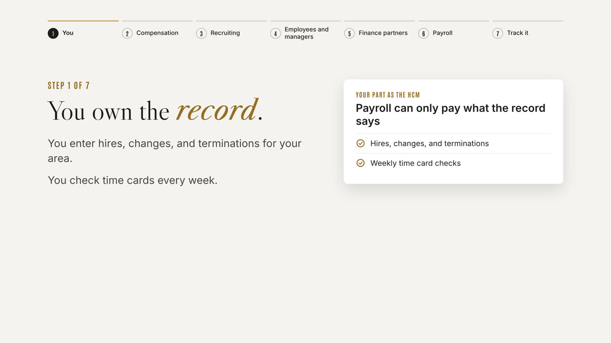
06Compensation owns the job behind the pay.
Compensation picks the job code and level and issues the pre-search and reclass memos. Do not decide exempt or non-exempt status yourself.

07Recruiting and central HR own moves that come from a requisition.
A transfer or promotion that came from a job application is processed by central HR. Do not submit it yourself.
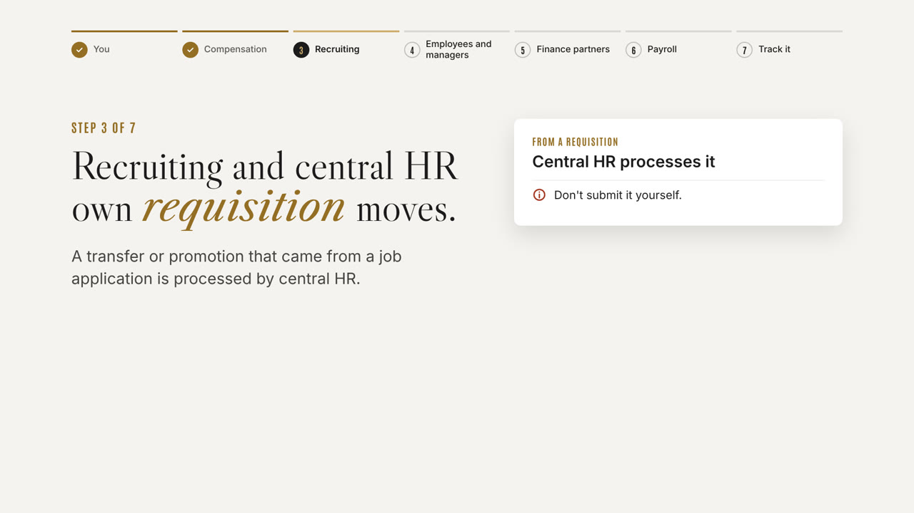
08Employees and managers own the hours.
The employee approves their time card, the manager approves it, and payroll signs off. You check that nothing is stuck.
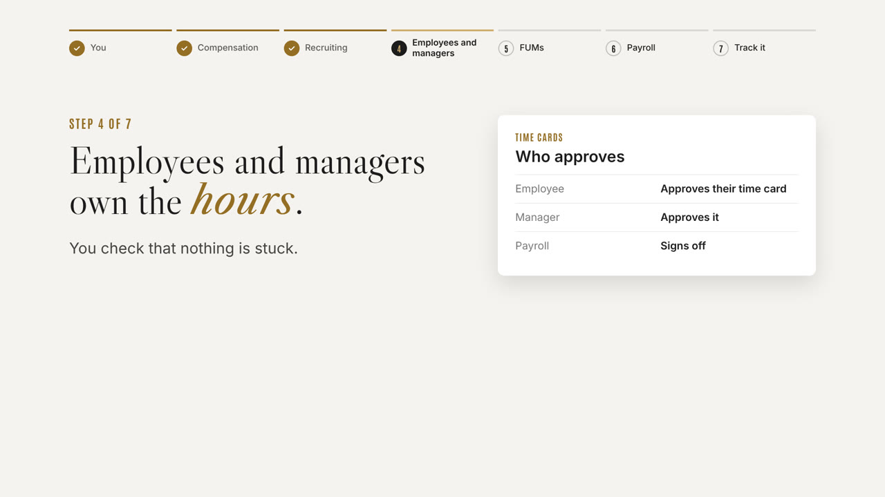
09FUMs own the funding.
Get the costing string from your FUM (financial unit manager). In many areas the FUM also enters costing, so confirm who owns it in your department.

10Payroll owns the payroll run and every correction.
Bring payroll the facts: what was expected, what was paid, and what the record shows. Payroll decides how and when to correct the pay.
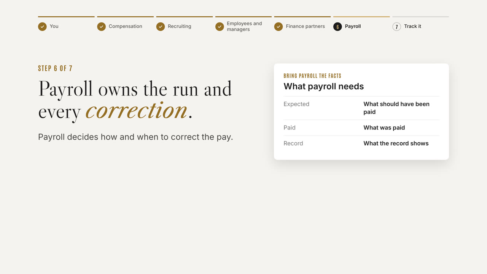
11Track your transaction until it is approved.
Check the notifications bell daily and before the cutoff. A transaction that is still pending does not pay.

Start Here
Oracle HCM structure and data integrity
Use whenYou are new to Oracle HCM, a screen uses a term you are not sure about, or you are entering person, position, or assignment data.
- 1
Start at the top: the enterprise and the legal employer.
- 2
Know the difference between a business unit and a work unit.
- Use Work Unit, the term Oracle uses, rather than department.
- Some departments are grouped into a single work unit.
- 3
Know what a work relationship is.
- 4
Tell a job from a position.
- Job codes come from Vanderbilt's job architecture. Not every worker type has a six-digit job code yet.
- 5
Understand the grade.
- 6
Read the assignment.
- A person has only one primary work relationship and one primary assignment in it.
- 7
Use the person number.
- 8
Check the person type before you act.
- 9
Follow the chain from position to pay.
- 10
Know that positions push values to assignments.
Oracle HCM structure and data integrity · continued
- 11
Check dates as carefully as values.
- An update adds history; a correction overwrites the old value with no history.
- 12
Remember costing follows the data.
- 13
Confirm what the position does not set.
- 14
Review before you submit.
- Check: person, effective date, position, hours, pay, costing.
Watch-outs
- Changes to a position can flow into every incumbent's assignment. Know which fields the position controls before you edit a position.
- Do not reuse or repurpose a position for a different worker type; ask Compensation instead.
- Open item: confirm whether HCM access is scoped to the business unit or the work unit.
- Open item: confirm which person types and work relationship types Vanderbilt uses and what each one means for pay.
- Fixes after payroll runs become retro adjustments in a later payroll and may mean a late or incorrect paycheck.
- Never repurpose a position across worker types to save time, and reuse an inactive position only if it meets current guidelines.
- Open item: confirm which data errors Vanderbilt sees most often and who to contact for corrections.
- Open item: add a walkthrough of the Departmental Playbook costing report.
Course: futureslearninghub.github.io/HCM_Academy/courses/hcm-structure/ · Sources: Oracle: Overview of Workforce Structures; Oracle: Employment Model; Oracle: Overview of Loading Workers; Oracle: How Position Synchronization Impacts Assignments; Oracle: Examples of Updating Date-Effective Objects; Oracle: Recalculate Payroll for Retroactive Changes
Oracle HCM structure and data integrity
| Term | What it means for you |
|---|---|
| Legal employer | The organization that hires, pays, and reports taxes for the person |
| Business unit | A large part of Vanderbilt that does its own HR and finance processing |
| Work unit | A group inside a business unit where people sit and are costed by default |
| Work relationship | The person's link to a legal employer, such as employee or nonworker |
| Job vs. position | Generic role vs. a specific seat in a work unit |
| Assignment | Where job, pay, hours, and manager live |
| Person number | The unique number that identifies a person |
Detailed job aid · Oracle HCM structure and data integrity
Oracle HCM structure and data integrity, step by step
01Start at the top: the enterprise and the legal employer.
The enterprise is Vanderbilt as a whole in Oracle. The legal employer is the organization that is legally the employer: it hires the person, pays them, and reports their taxes. Every work relationship belongs to one legal employer.
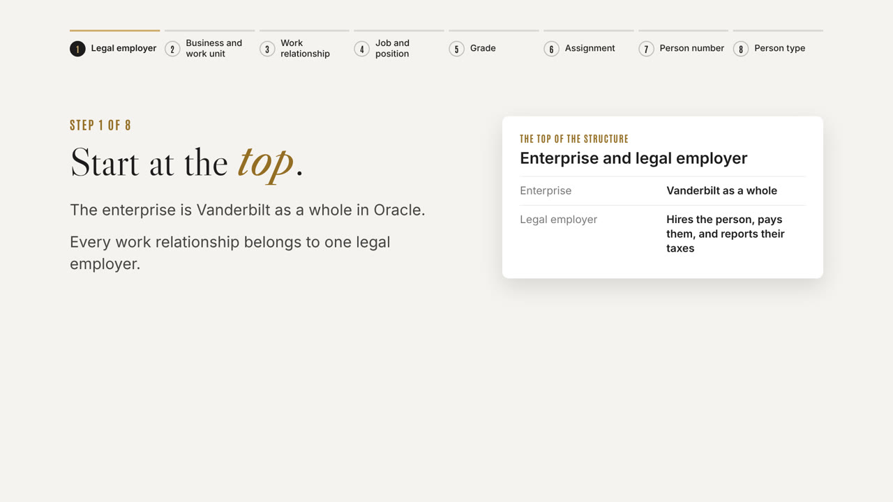
02Know the difference between a business unit and a work unit.
A business unit (BU) is a large part of Vanderbilt that does its own HR and finance processing. A work unit is a smaller group inside a business unit, where people are organized and, by default, costed.

03Know what a work relationship is.
A work relationship is the link between a person and a legal employer, for example as an employee, a contingent worker, or a nonworker. A person can have more than one, and each work relationship holds one or more assignments.

04Tell a job from a position.
A job is a generic role (for example, Administrative Assistant). A position is one specific instance of a job in a specific work unit, with its own budgeted details. People are hired into positions, and the assignment can inherit values from the position.
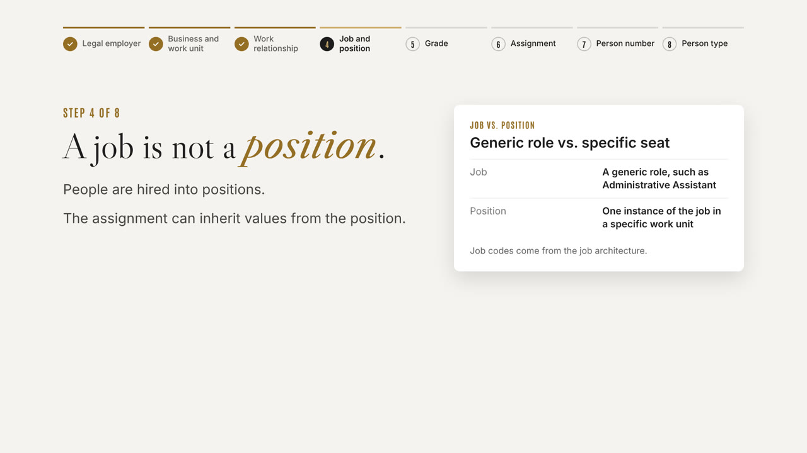
05Understand the grade.
A grade sets the pay range attached to a job or position. It does not set a person's actual salary, which is recorded separately on the assignment.
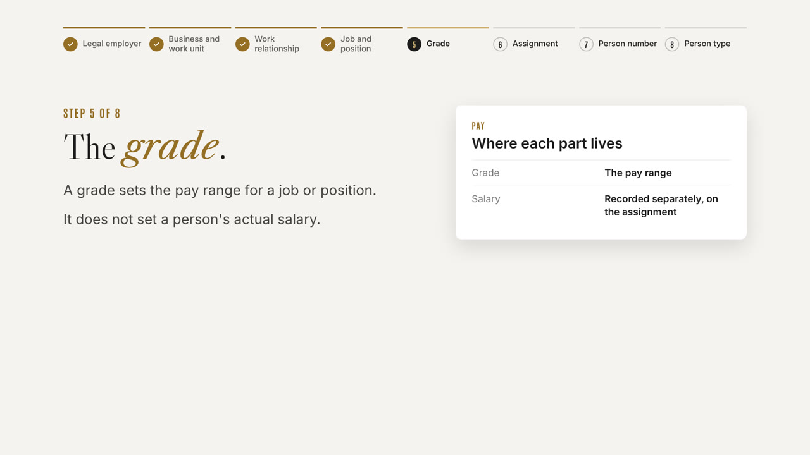
06Read the assignment.
The assignment is where the job, position, work unit, location, manager, hours, and payroll live.

07Use the person number.
Every person in Oracle has a unique person number. Use it to search, and to tell apart people with similar names.
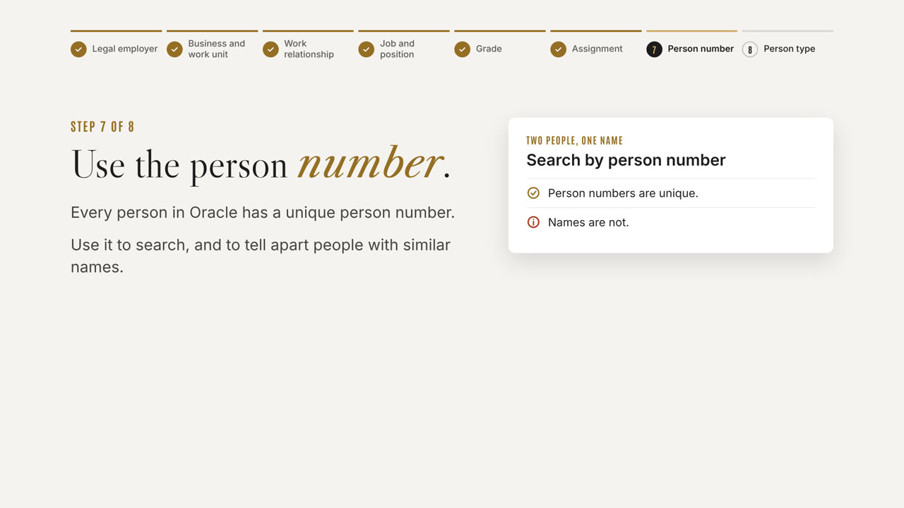
08Check the person type before you act.
Person types (such as Employee, Contingent Worker, Nonworker, Pending Worker) tell Oracle and payroll how to treat the record. Picking the wrong one changes pay, benefits, and reporting.

09Follow the chain from position to pay.
Positions feed requisitions, requisitions feed pending worker conversion, and conversion creates the assignment that drives pay. An error at the start repeats at every step.
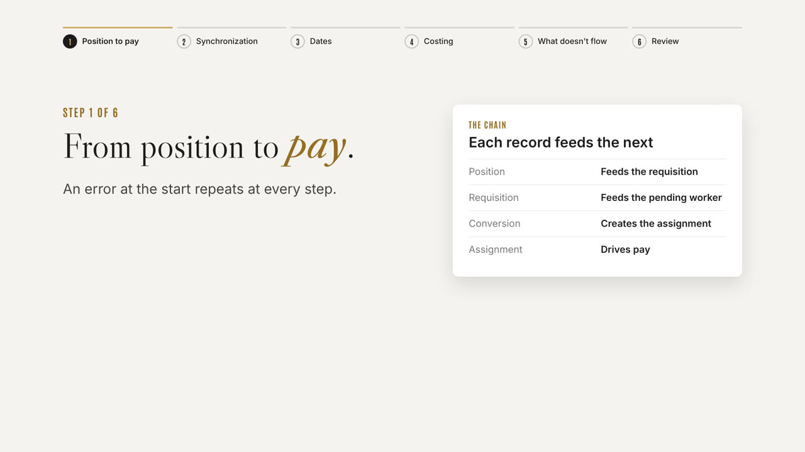
10Know that positions push values to assignments.
With position synchronization, values on the position (such as department, job, location, grade) flow to incumbents' assignments and lock those fields. A wrong position value lands on every person in it.
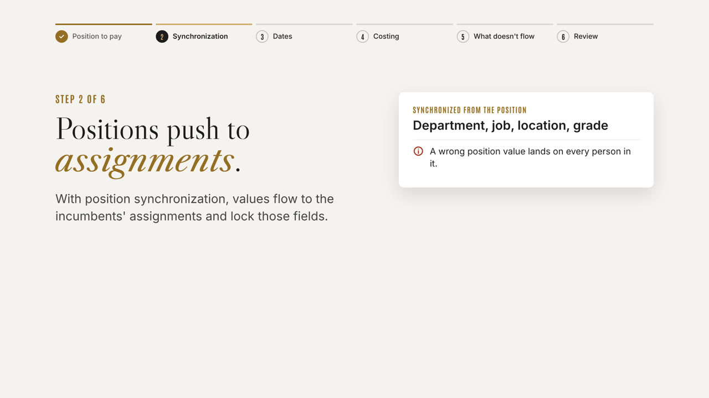
11Check dates as carefully as values.
Oracle records are date effective. Every transaction that affects pay needs the right effective date: the date the change takes effect for pay. That includes hires, salary changes, working hours changes, transfers, terminations, one-time payments, and costing changes. A wrong date can pay someone too early or too late, or create retro pay.
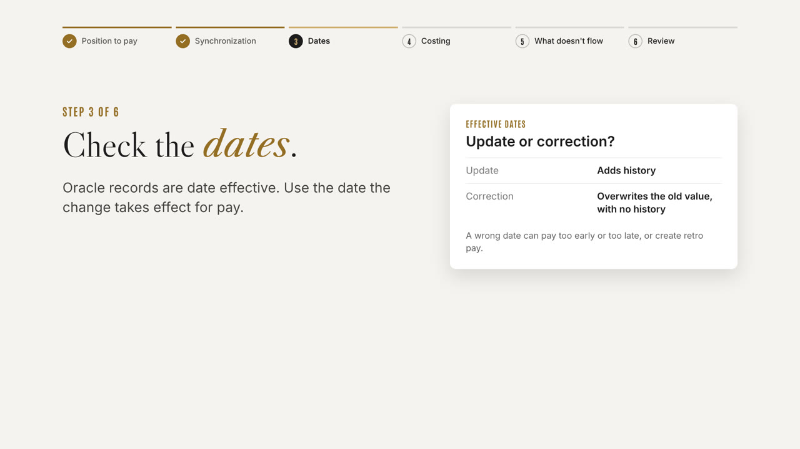
12Remember costing follows the data.
Pay is charged to the costing on the assignment. Left blank, it uses the work unit's default costing, so a wrong work unit means pay is charged to the wrong place. A mistyped costing string does not default: it goes to suspense. When someone transfers to a new business unit, the HCM in the new area reviews and updates their costing.
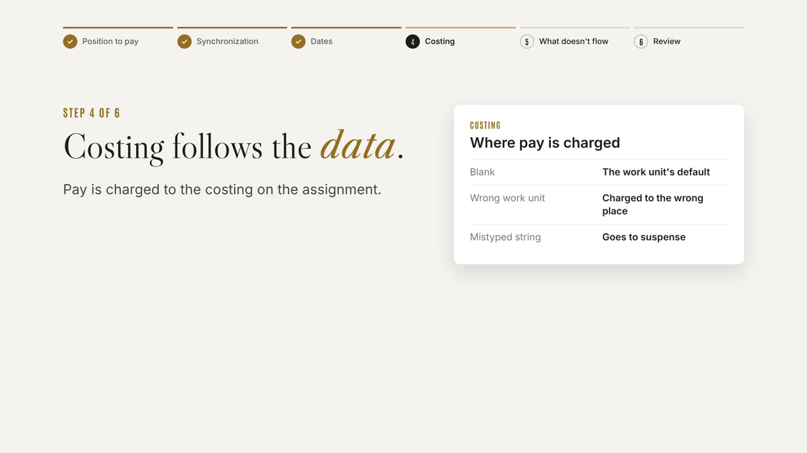
13Confirm what the position does not set.
After a position reclassification, person type, location, working hours, and hourly salary do not flow from the position. Check and update them on the assignment yourself.
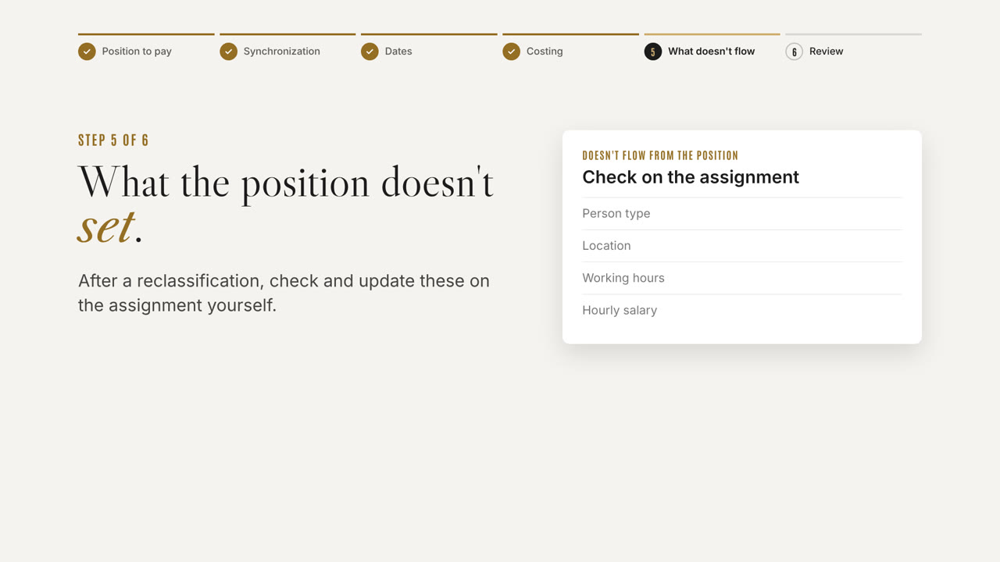
14Review before you submit.
Read every field back against the source document, then check the costing reports before the payroll cutoff. The Cost Allocation Verification Report flags mismatched data.

Start Here
Working in Oracle HCM: find a person, read the record, track approvals
Use whenYou need to look up a person, start a transaction for someone in your area, or check where a transaction you submitted is.
- 1
From the Oracle Home page, open Our Workforce.
- 2
Click Show More to see every quick action.
- 3
Open Employment Info and search for the person.
- Use person number when names are similar.
- 4
Read the assignment details.
- 5
Review the history of changes.
- 6
Check future-dated changes before you submit anything new.
- 7
Open the notifications bell at the top of Oracle.
- 8
Find a transaction you submitted and check its status.
- 9
Act on tasks assigned to you.
- 10
Use Request More Information or send back instead of rejecting for small fixes.
- 11
Withdraw your own transaction if you need to change it.
- Withdraw is on by default in Oracle; your configuration may differ.
Working in Oracle HCM: find a person, read the record, track approvals · continued
- 12
Set up delegation before you are out.
Watch-outs
- Do not start a transaction until you have confirmed the right person and the right assignment.
- What you can see and do is controlled by your security role; a missing quick action usually means a role issue, not a system error.
- Open item: confirm how HCMs view a record as of a past or future date on the Redwood Employment Info page at Vanderbilt.
- Check the bell daily, and before every payroll cutoff. A transaction waiting on an approver is not in payroll yet.
- Rejecting means the whole approval chain starts over after resubmission; send back or request information when a small fix is all that is needed.
- If people or transactions in your area are missing, your access may need an area of responsibility. Your business unit approver requests it.
- Open item: confirm Vanderbilt's approval chains by transaction type, whether delegation is enabled for HCMs, and the exact action labels on screen.
Course: futureslearninghub.github.io/HCM_Academy/courses/quick-actions-person-info/ · Sources: Oracle: Overview of Quick Actions; Oracle: Enhanced Redwood Person Search (25A); Oracle: Manage Salary Info from Redwood View Employment Details Page (24D); Oracle: Approval Management Configuration Options for Oracle Fusion Human Capital Management; Oracle: How You Define Approvals for Human Capital Management; Oracle: Worklist and Email Notifications
Detailed job aid · Working in Oracle HCM: find a person, read the record, track approvals
Working in Oracle HCM: find a person, read the record, track approvals, step by step
01From the Oracle Home page, open Our Workforce.
Our Workforce is Vanderbilt's name for Oracle's My Client Groups. It holds the quick actions for people in your area.
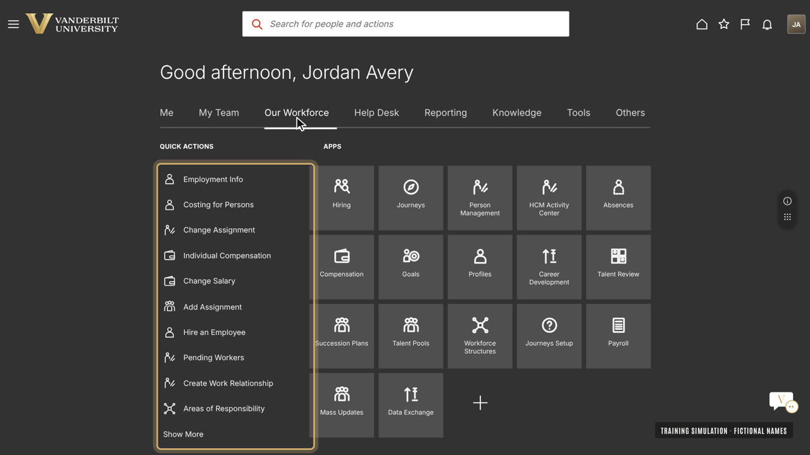
02Click Show More to see every quick action.
Only a few quick actions show at first. Show More lists all of them, grouped by area (for example, Employment). Which actions you see depends on your security role.
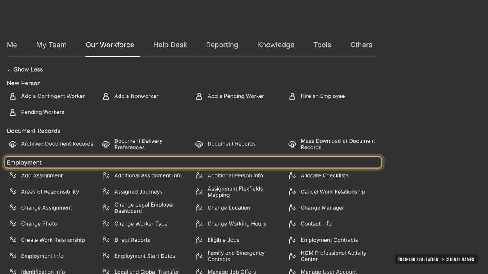
03Open Employment Info and search for the person.
Search by name or person number. Person number is the safest way to avoid picking the wrong person with a similar name. Check the person type and status in the results before you select.
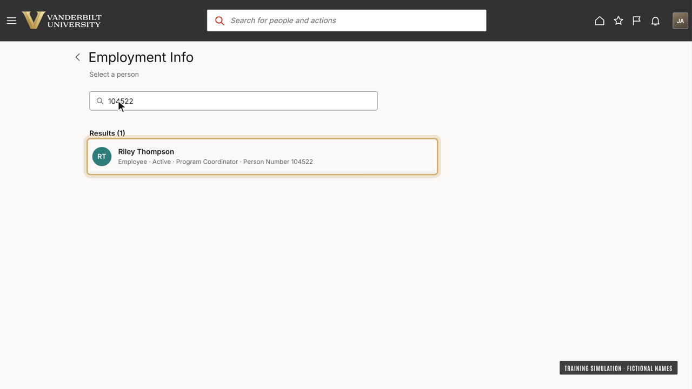
04Read the assignment details.
Employment Info shows the work relationship and assignment: business unit, department, job, position, location, manager, working hours, and assignment status. If the person has more than one assignment, make sure you are on the right one.
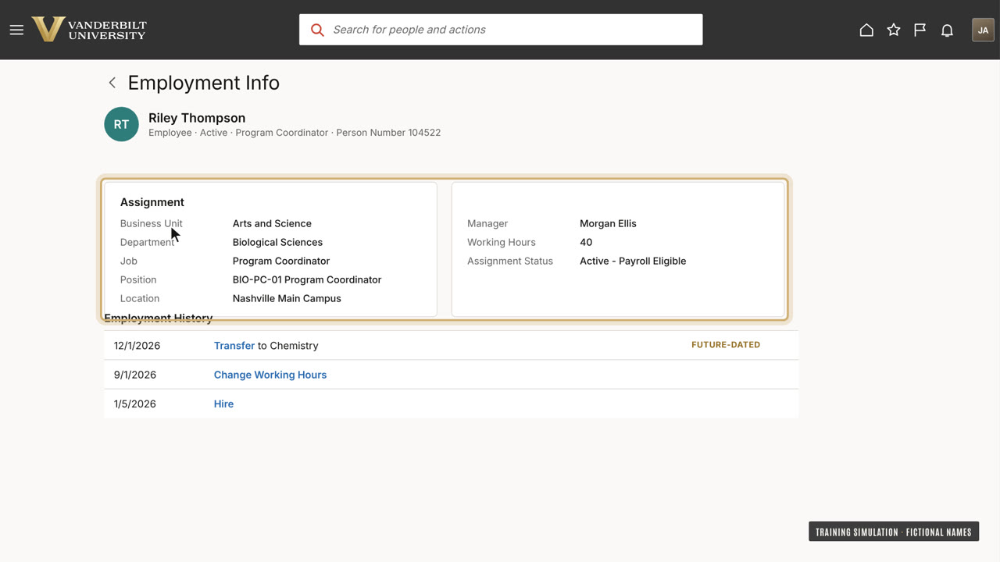
05Review the history of changes.
Employment Info lists date-effective historical changes. Click an entry to open View Employment Details and see exactly what changed on that date, including salary when it changed at the same time.

06Check future-dated changes before you submit anything new.
Oracle records are date effective. A pending or future-dated change (such as a transfer next month) can affect what you are about to submit. If you see one, coordinate before acting.
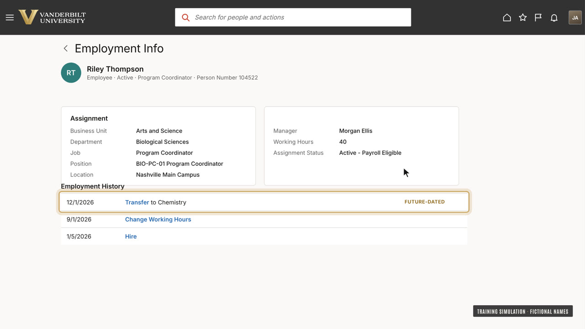
07Open the notifications bell at the top of Oracle.
Click the bell icon at the top right of any Oracle page. It lists approval tasks and FYI notifications. Select Show All (or the notifications page) to see the full list with filters.

08Find a transaction you submitted and check its status.
Open the notification for your transaction to see the approval history: who has approved, who it is waiting on, and any comments. A transaction is not final until all approvers have acted.

09Act on tasks assigned to you.
Open the task, review the details, and choose the action, such as Approve or Reject. Add a comment when you reject or ask for changes so the requester knows what to fix.

10Use Request More Information or send back instead of rejecting for small fixes.
Oracle approvals let an approver ask the requester or another approver for more information, and the task returns after it is answered. A rejected transaction must be resubmitted and the approval process repeats.
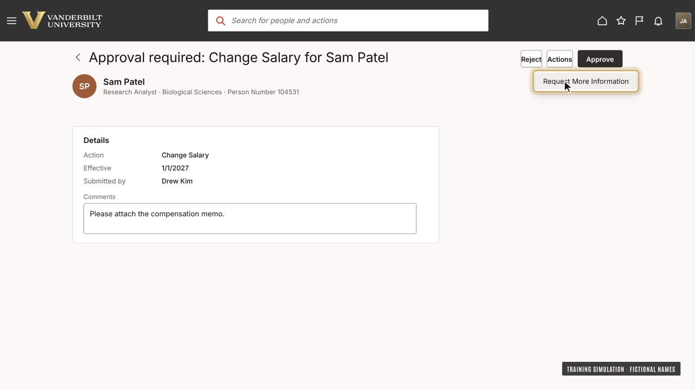
11Withdraw your own transaction if you need to change it.
While approval is still in progress, the requester can withdraw the transaction. Approvers who have not acted have it removed from their worklists; those who already acted are notified. Fix it and resubmit.

12Set up delegation before you are out.
Oracle lets approvers delegate approval responsibilities to another person. Use it for planned time away so transactions are not stuck waiting on you.

Start Here
The Shared Administrative Calendar
Use whenYou are planning when to submit a transaction, or you need to know whether a change will make this payroll.
- 1
Open the HR/Payroll Calendar.
- 2
Find your pay group.
- Weekly: Monday to Sunday.
- Biweekly: two weeks, Sunday to Saturday.
- Monthly: the calendar month.
- Academic Monthly: the 16th to the 15th.
- Off Cycle: extra runs, about two a month.
- 3
Monthly pay: the cutoff is the 18th in most months.
- 4
Weekly and biweekly pay: the cutoff is the Friday a week before payday.
- 5
Time cards are due at noon on the Monday after the pay period ends.
- 6
Off-cycle runs: noon, two days before.
- 7
Submit early enough for approvals.
- 8
Know what happens if you miss it.
| Payroll | Paid | HCM Transaction Cutoff | Time Card Due |
|---|---|---|---|
| Weekly | The Friday after the pay period ends | The Friday a week before payday | Noon on the Monday after the period ends |
| Biweekly | The Friday after the pay period ends | The Friday a week before payday | Noon on the Monday after the period ends |
| Monthly and Academic Monthly | The last business day of the month | The 18th; December 16 | None |
| Off Cycle | About twice a month | Noon, two days before the paycheck date | Noon, two days before the paycheck date |
Watch-outs
- Do not work from memory. Dates move around holidays, and the December cutoff is early.
- Pending approvals do not pay. A change still waiting in approvals at the cutoff misses that payroll.
- Open item: the Retro Change Cutoff that the costing courses use is not on the published calendar. Payroll or Finance to say where it is published.
- Open item: the 2027 calendar adds a Semi Monthly payroll that no course covers, and lists no off-cycle runs. Payroll to say who is paid semi-monthly and what changes for HCMs.
- Open item: confirm that the HR/Payroll Calendar is what HCMs call the shared administrative calendar, and who maintains it.
Course: futureslearninghub.github.io/HCM_Academy/courses/shared-calendar/ · Sources: Vanderbilt HR/Payroll Calendar, 2026 and 2027 (People Experience, Pay Calendar page); Oracle: Overview of Payroll Definitions; Oracle: Recalculate Payroll for Retroactive Changes
Detailed job aid · The Shared Administrative Calendar
Reading the HR/Payroll Calendar, step by step
01Open the HR/Payroll Calendar.
People Experience publishes it on the Pay Calendar page of its site (hr.vanderbilt.edu, under Payroll). There is one PDF for each year, with a page for each month. The 2026 and 2027 calendars are posted.

02Find your pay group.
Each row is one payroll. For each, the calendar gives the pay period, the paycheck date, the HCM Transaction Cutoff, and when time cards are due.
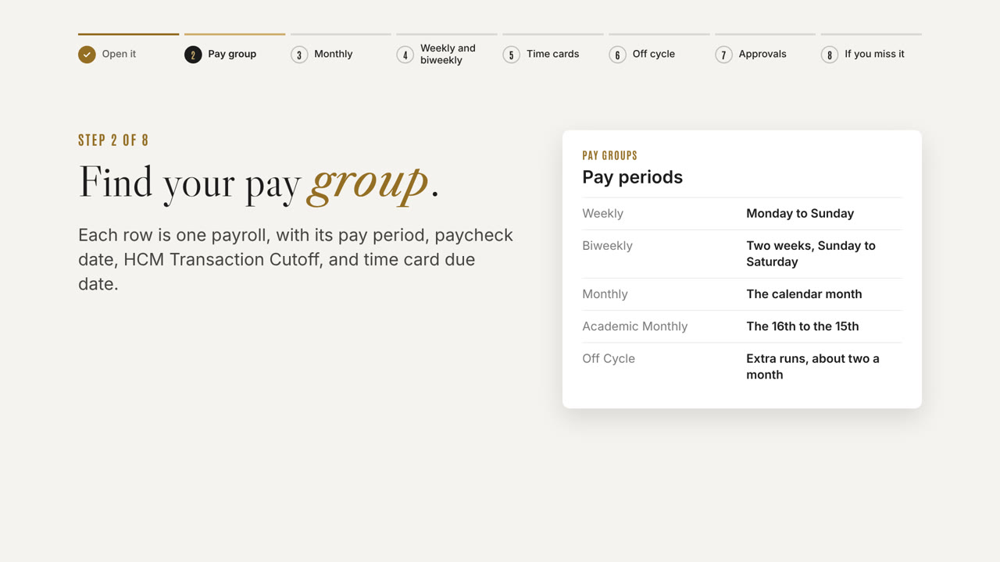
03Monthly pay: the cutoff is the 18th in most months.
In 2026 the HCM Transaction Cutoff for monthly and academic monthly pay is the 18th in every month but December, when it is the 16th. It stays the 18th even when that is a weekend, so finish on the last working day before it. In 2027 it is the 17th or the 19th in five months.

04Weekly and biweekly pay: the cutoff is the Friday a week before payday.
The HCM Transaction Cutoff falls seven days before the paycheck date in nearly every pay period. Holiday weeks move it.
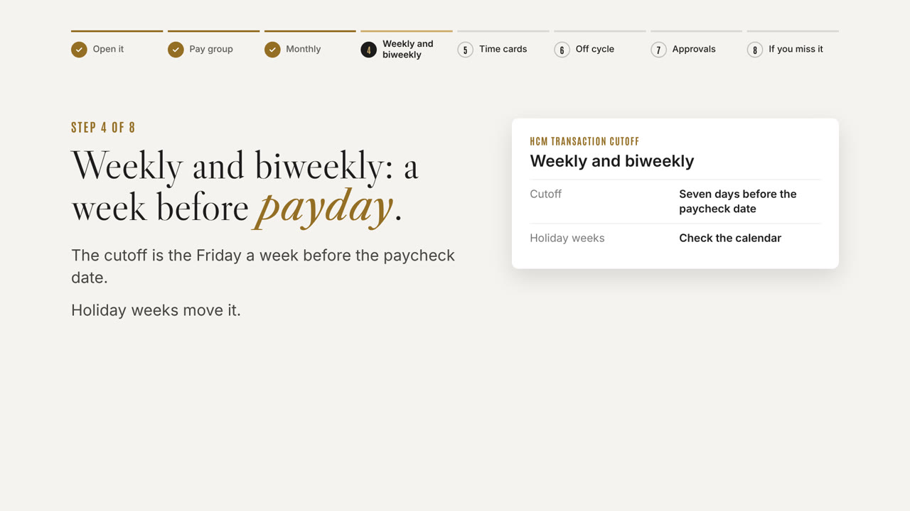
05Time cards are due at noon on the Monday after the pay period ends.
This is the Time Card Due column for weekly and biweekly pay. In holiday weeks the deadline moves, often to 10am or to Tuesday. Monthly pay has no time card.
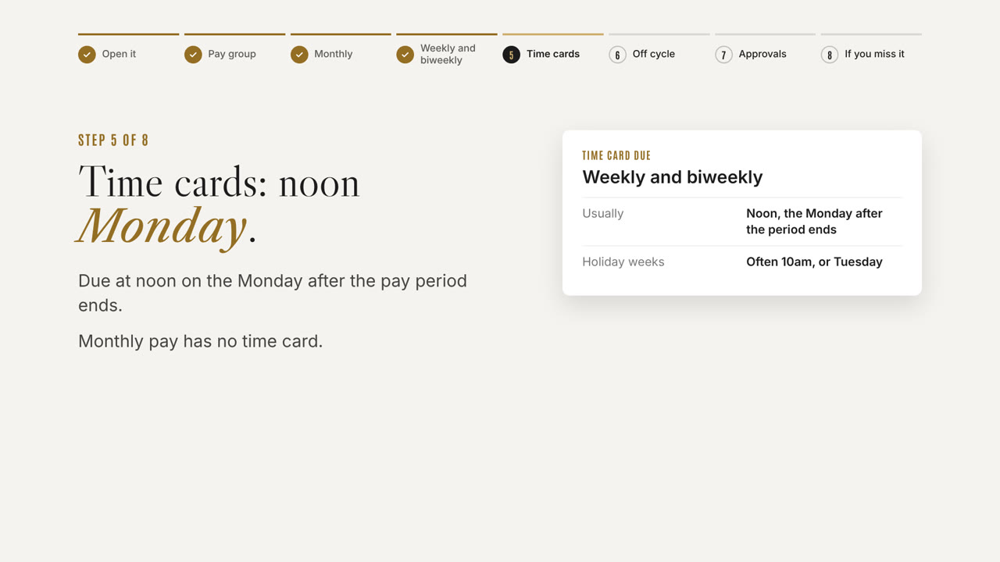
06Off-cycle runs: noon, two days before.
The calendar lists the off-cycle paycheck dates. For each one, the HCM Transaction Cutoff and the time card deadline are noon two days before, usually a Wednesday.

07Submit early enough for approvals.
A transaction counts only once it is fully approved. Leave time for every approver to act before the cutoff, and track it with the notifications bell.

08Know what happens if you miss it.
A change that arrives after payroll is calculated is picked up as a retroactive adjustment in a later run. The person may be paid late or need a correction.
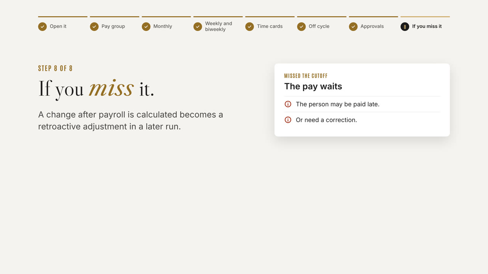
Start Here
FERPA Tutorial for Staff
Use whenYou are working with a student worker's record or someone asks you for information about a student.
- 1
Know what an education record is.
- Something you only observed in person is generally not a record.
- 2
Access requires a legitimate educational interest.
- 3
Student worker records may be education records.
- Treat student worker files with FERPA care.
- 4
Directory information has limits.
- 5
Get written consent for other disclosures.
- 6
Do not pass information along.
Watch-outs
- Do not give a student's class schedule or grades to a caller, parent, or outside employer. Send requests for student information to the University Registrar.
- A student who opted out of directory information must not have even directory details released.
- Questions about FERPA go to the University Registrar or the Office of the General Counsel.
- Open item: confirm the FERPA training HCMs must take and how Vanderbilt classifies student worker records.
Course: futureslearninghub.github.io/HCM_Academy/courses/ferpa-for-staff/ · Sources: U.S. Department of Education: FERPA; U.S. Department of Education: school officials with a legitimate educational interest (FAQ); U.S. Department of Education: FERPA Exceptions Summary
Detailed job aid · FERPA Tutorial for Staff
FERPA, point by point
01Know what an education record is.
Education records are records directly related to a student and maintained by the school, such as transcripts, class schedules, grades, and disciplinary records. Those live in YES, Vanderbilt's student system, not in Oracle. What you do see in Oracle when you hire and pay student workers, such as Federal Work-Study (FWS) status and personal information, needs the same care.
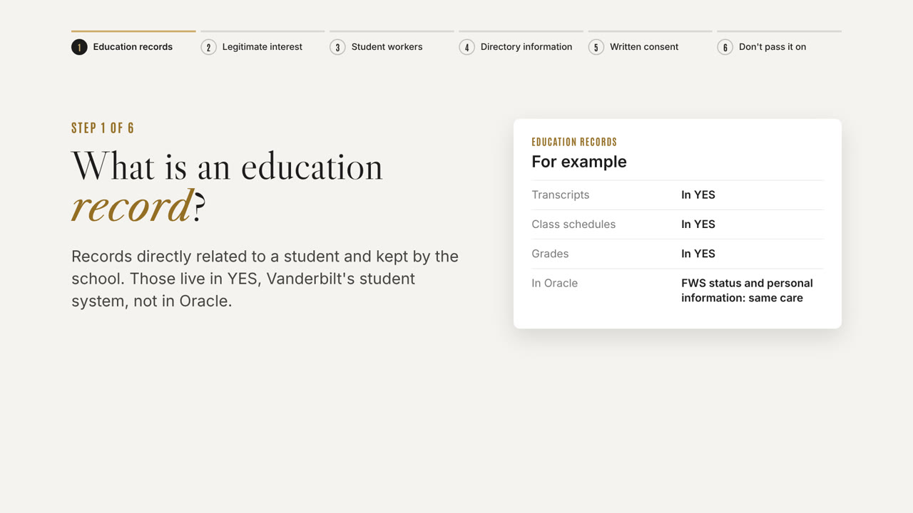
02Access requires a legitimate educational interest.
School officials may see education records without consent only when they need them to do their job. Curiosity, or interest in a student who fits a profile, does not qualify.
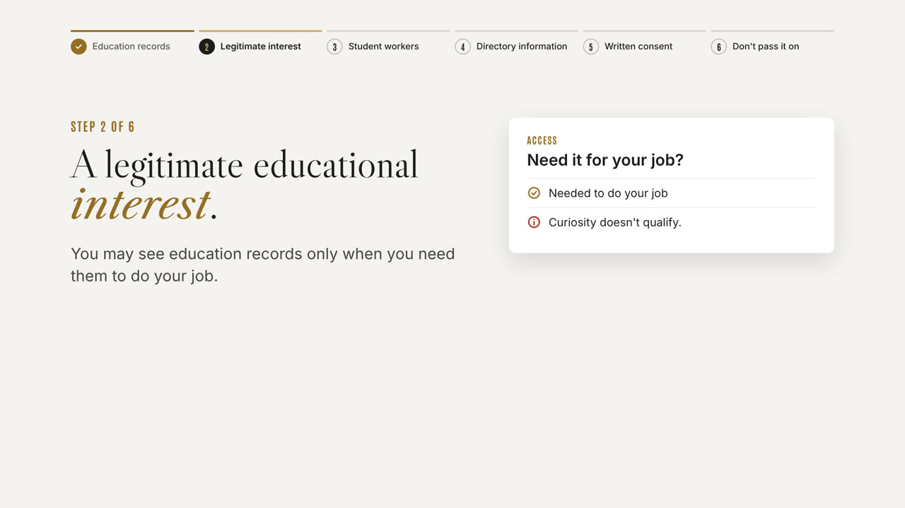
03Student worker records may be education records.
Records about someone employed because they are a student (such as work-study) are generally education records under FERPA. Records about an employee hired for reasons unrelated to student status are not.
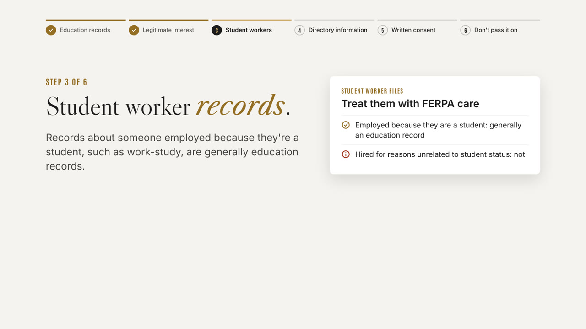
04Directory information has limits.
Vanderbilt's directory information includes the student's name, addresses, telephone number, email address, student ID photo, major, school, classification, activities and sports, dates of attendance, and degrees and awards. It may be released without consent unless the student has asked the University Registrar in writing to withhold it. Grades, GPA, and class schedules are not on the list.
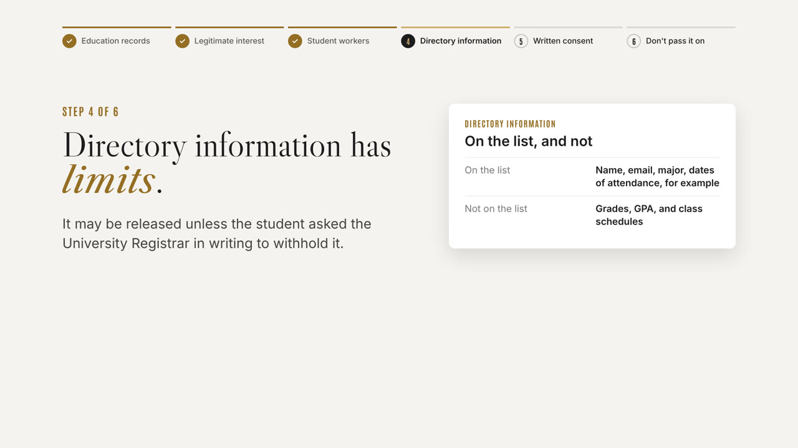
05Get written consent for other disclosures.
Outside the FERPA exceptions, a school needs the eligible student's written consent before disclosing education records. When in doubt, do not share; refer the request.
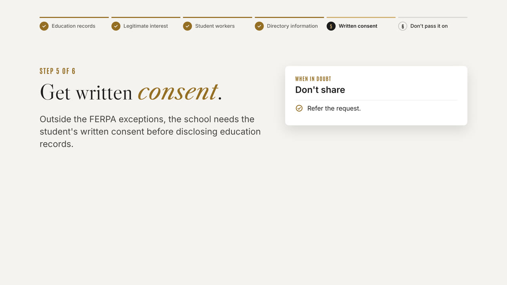
06Do not pass information along.
Access as a school official does not allow you to forward what you learn to others without their own legitimate educational interest.
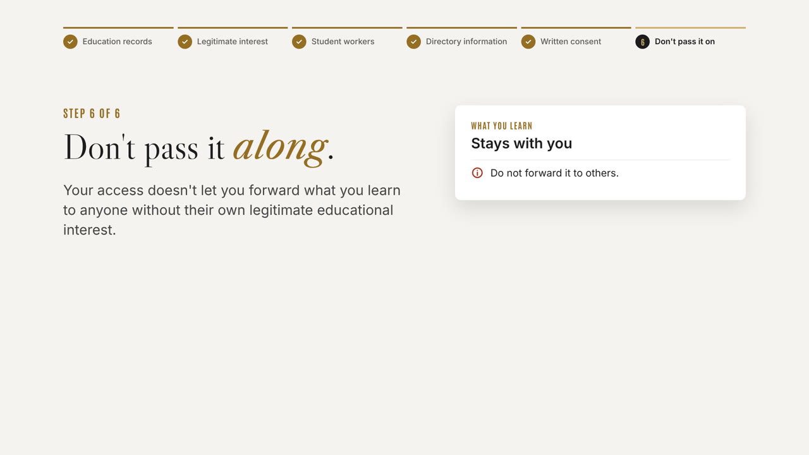
Start Here
Worker types, classification, and required checks
Use whenYou are bringing on a new person, or someone wants to pay a person through a contract or invoice instead of hiring them.
- 1
Ask who controls how the work is done.
- 2
Ask who controls the business side.
- 3
Look at the relationship.
- 4
Apply the DOL economic reality test for wage and hour law.
- Labels and pay method do not decide status.
- 5
Treat students who perform services as employees.
- 6
Use the IC20 test for professional services agreements.
- Some divisions have the HCM complete the IC20 with the requestor.
- 7
When in doubt, stop and ask before anyone starts.
- 8
Identify the worker type first.
- 9
Know who counts as each worker type.
- 10
Look up the requirement in the table.
- 11
Have the employee complete I-9 Section 1 by the first day of work.
Worker types, classification, and required checks · continued
- 12
Complete I-9 Section 2 within three business days of the start date.
- Example: start Monday, Section 2 due Thursday.
- 13
Wait for clear to start when a background check applies.
- 14
Request checks manually when there is no requisition.
| Worker type | I-9 | Background check |
|---|---|---|
| Student workers | Yes | No |
| Staff and faculty | Yes | Yes |
| Campus affiliates | No | Yes |
| Service Free Stipend | No | No |
| Student Expense Only | No | No |
Watch-outs
- A request to pay a student by invoice, gift card, or stipend for work performed is a red flag; hire them as an employee.
- Contractors are excluded from the new hire report; employees must be included.
- Open item: confirm whether HCMs in every area complete the IC20 with the requestor.
- Section 1 cannot wait for the three-day window; it is due on day one.
- New York requires non-criminal background checks before any conditional offer.
- Open item: confirm who completes Section 2 of the I-9 at Vanderbilt, in which system, and how remote hires are handled.
- Open item: confirm whether every type of campus affiliate needs an Oracle record.
- Open item: add when and how to complete the Formstack background check request.
Course: futureslearninghub.github.io/HCM_Academy/courses/i9-background-by-worker-type/ · Sources: IRS: Topic no. 762, Independent contractor vs. employee; DOL: Fact Sheet 13, Employment Relationship Under the FLSA; IRS: Student exception to FICA tax; USCIS: Completing Section 1, Employee Information and Attestation; USCIS: Completing Section 2, Employer Review and Attestation; USCIS: Handbook for Employers M-274, 2.0 Who Must Complete Form I-9
Detailed job aid · Worker types, classification, and required checks
Worker types, classification, and required checks, step by step
01Ask who controls how the work is done.
Under the IRS common-law rules, behavioral control matters: if the university directs how, when, and where the work is done, or trains the worker, that points to an employee.
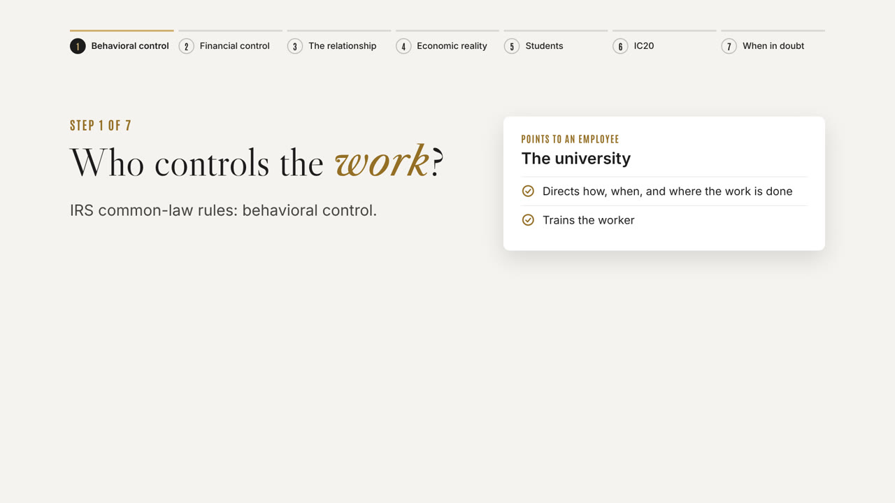
02Ask who controls the business side.
Financial control: does the worker invest their own money, offer services to the public, set their price, and risk profit or loss? If not, that points to an employee.

03Look at the relationship.
An ongoing relationship with no set end, benefits, or work that is a regular part of the department's operations points to employment. A written contract calling someone a contractor does not decide it.

04Apply the DOL economic reality test for wage and hour law.
Under the FLSA, the question is whether the worker is economically dependent on the employer or truly in business for themselves. The FLSA definition of employment is broader than the common-law test.

05Treat students who perform services as employees.
Students who work for the university, such as research help, office support, or event staffing, are generally employees and must be hired and paid through payroll. Payroll applies any student FICA exception; you do not.
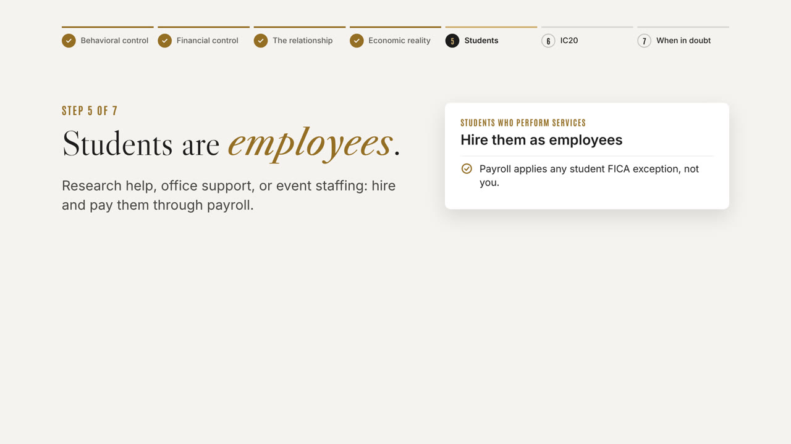
06Use the IC20 test for professional services agreements.
When someone requests a professional services agreement (PSA), Finance typically shares the IC20 test. The completed test goes to an engagement consultant, who advises on the classification. Fill it out with the requestor so the answers are accurate.

07When in doubt, stop and ask before anyone starts.
Do not let work begin under a contract while status is unclear. Get the classification answered first, then hire through Oracle if the person is an employee.

08Identify the worker type first.
Confirm whether the person is a student worker, staff, faculty, campus affiliate, or a Service Free Stipend or Student Expense Only appointment. The type sets which checks apply.

09Know who counts as each worker type.
Interns can be Vanderbilt students or people with no other tie to Vanderbilt, including students at other schools. Only Vanderbilt students hold a student relationship; other interns are set up as postdocs, temporary staff, or term staff, depending on the payroll relationship. Campus affiliates can be independent contractors, employees of contracted vendors, or non-compensated affiliates.

10Look up the requirement in the table.
Use the table below. Paid employees need an I-9. Staff and faculty also need a background check. Affiliates need a background check only.
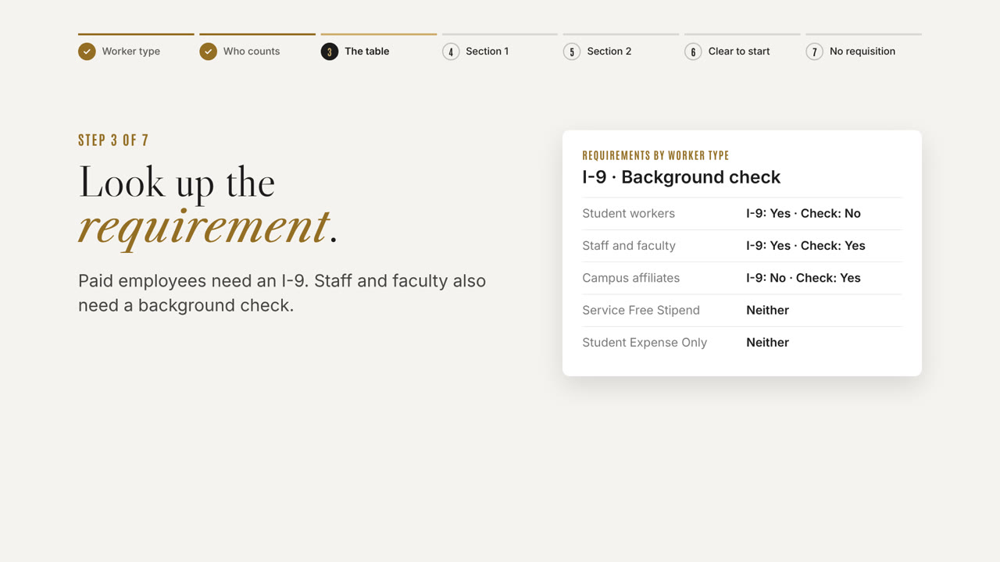
11Have the employee complete I-9 Section 1 by the first day of work.
USCIS allows Section 1 any time after the offer is accepted, but no later than the first day of employment for pay.

12Complete I-9 Section 2 within three business days of the start date.
The employer reviews the employee's documents in person and completes Section 2 within three business days. If the job lasts fewer than three business days, finish it on day one.

13Wait for clear to start when a background check applies.
PEBC (the pre-employment background check team) clears the check, run through HireRight, and emails clear to start. Do not start the person before that email.
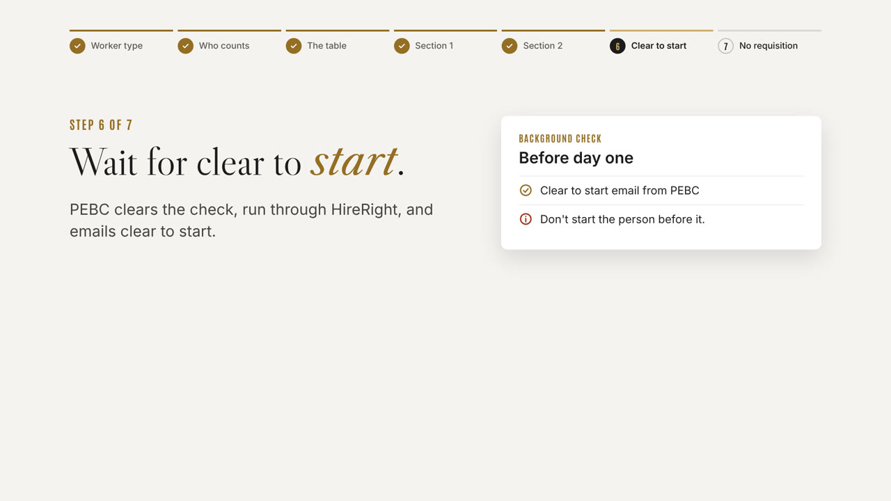
14Request checks manually when there is no requisition.
Checks for staff on requisitions are automated in Oracle Recruiting. Populations not on a requisition need a manual request through Formstack.
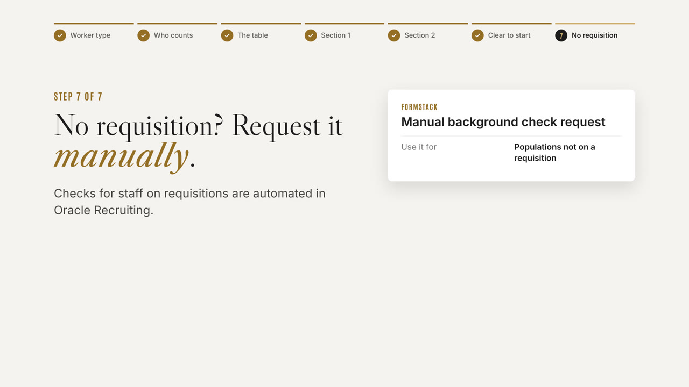
01
Section 01
Positions, Recruitment & Hiring
Everything that fills a role: the position, the compensation memo, background checks, the hire transaction, and converting the pending worker. Student and faculty hiring is in topic 06.
- Job Architecture overview, Part 1: How talent is organized and how it impacts recruiting decisions52
- Job Architecture overview, Part 2: How our job architecture is set up in Oracle53
- Create a position54
- Update a position69
- Compensation Management: Getting the Compensation Memo73
- Create a requisition77
- Background checks88
- Convert a pending worker92
- Rehires and eligibility for rehire101
- Staff105
- Interns (Paid and Unpaid)110
- Non-Workers111
Position Management
Job Architecture overview, Part 1: How talent is organized and how it impacts recruiting decisions
Use whenYou are new to job architecture, or you need to read a job title, family, or level before you build a position or requisition.
- 1
Job architecture
- 2
Job family and sub-family
- 3
Growth stream
- 4
Job level
- 5
Compensation matches the role to a job.
- 6
Review the positions in your area.
Watch-outs
- Review the positions in your assigned area and how they fit in the job architecture before you build or post anything.
- Ask Compensation or your engagement consultant for the materials that show Vanderbilt's families, growth streams, and levels.
- Open item: add links to Vanderbilt's job architecture resources and to the employee roster and workforce position reports.
Course: futureslearninghub.github.io/HCM_Academy/courses/job-architecture/ · Sources: HCM training session 1, positions and pending workers, Sep 8, 2026; HCM training session 2, requisitions and assignment changes, Sep 9, 2026
Hiring
Job Architecture overview, Part 2: How our job architecture is set up in Oracle
Use whenYou are setting up or reading a position and need to know how the job, job code, and job name work in Oracle.
- 1
Job codes and position numbers are different.
- 2
Six-digit job codes are the job architecture.
- 3
The job name carries its level.
- 4
The job name becomes the business title.
- 5
Skills come with the job.
- 6
Pay ranges are tied to the job.
Watch-outs
- A requisition whose job code doesn't match the pre-search memo is sent back.
- Open item: confirm how positions for students, postdocs, interns, affiliates, and contractors are set up until they are mapped to the job architecture.
- Open item: confirm whether the University growth level is the same as the grade tied to compensation.
Course: futureslearninghub.github.io/HCM_Academy/courses/job-architecture-oracle/ · Sources: Vanderbilt SME review, November 2026; Job Architecture overview (HCM Academy, earlier edition)
Position Management
Create a position
Use whenYou need a new position for a hire, or you manage positions for your business unit and want to avoid send-backs.
- 1
Decide: a new position or an update?
- Positions can't move between business units.
- Fix the position before any requisition; the requisition copies it when submitted.
- 2
Open Positions.
- 3
Click Add (or Create).
- 4
Effective date: today, not the start date.
- 5
Status: Active. Action reason: New Position.
- 6
Business unit, name, and code.
- 7
Work unit: the department.
- 8
Job: enter the job code from the pre-search memo.
- Staff and faculty jobs mapped to the job architecture use six-digit codes.
- Not every worker type has been mapped yet; positions for students, postdocs, interns, affiliates, and contractors may use other codes.
- 9
Location: where the person would sit on site.
- 10
Assignment category: the one on the memo.
Create a position · continued
- 11
Hours: keep Standard working hours at 40; set Working hours to the actual hours.
- 12
Headcount and type.
- 13
Overlap allowed: Yes. Then set Term or Flex if it applies.
- Temporary: six months or less.
- Term: a fixed role longer than six months, up to a year.
- Flex: needed only part of the year, such as summer help who return each year. Usually non-exempt; set as temporary with 20 working hours so benefits don't kick in.
- 14
Attach the documents, add comments, and click Submit.
- 15
Inactivate and reactivate on purpose.
- Don't repurpose a vacant position built for another worker type. Create a new one.
- 16
Use the job code from the memo.
- 17
Request new positions through VU Compensation.
- 18
Standard working hours are always 40.
- 19
Leave Manager blank on the position.
- 20
Set the real location.
- 21
Fix the position before the requisition.
- 22
Keep documents on the position.
Create a position · continued
Before you submit
- AttachPre-search memo from Compensation (required). Approved position description (attach).
- CheckEffective date is today, not the start date. The six-digit job code and assignment category match the memo. Location is where the person would sit on site. Standard working hours stay at 40. Working hours hold the actual hours.
- CutoffNo payroll cutoff. Date it today so it can be used.
Watch-outs
- An inactive position that no longer meets current guidelines, such as one with an old job code, can block updates and approval. Bring it up to date or create a new one.
- Don't repurpose an unused position that was built for a different worker type (for example, a student position for staff). Create a new one.
- The requisition copies the position when it is submitted. Fix the position before you create the requisition.
- Fields that get positions sent back: Standard working hours (always 40), Job (the code from the memo), Assignment category (never Professional salaried non-exempt), Manager (leave blank), Attachments (the memo for a staff position).
- Open item: confirm the job code, assignment category, and pre-search memo rules for positions that are not staff positions (students, postdocs, interns, affiliates, contractors).
- When in doubt about a code, category, or location, ask Compensation or your engagement consultant before you submit.
Course: futureslearninghub.github.io/HCM_Academy/courses/create-position/ · Sources: HCM training session 1, positions and pending workers, Sep 8, 2026; HCM training session 2, requisitions and assignment changes, Sep 9, 2026
Create a position
| Situation | Do this |
|---|---|
| A new role in your business unit | Create a new position |
| More seats with the same job and location | Use one pooled position (headcount more than 1) |
| A seat in a different location | Create a separate position |
| The business unit changes | Create a new position; positions can't move between business units |
| A vacant position built for another worker type | Create a new position; don't repurpose it |
| An inactive position you want to use again | Reactivate it only if it meets current guidelines; otherwise create a new one |
| The same role's name, job code, category, work unit, or location changes | Update the existing position |
Detailed job aid · Create a position
Create a position, step by step
01Decide: a new position or an update?
Use the table below. A new role, or a seat in a different location or business unit, needs a new position. The same role changing, such as its name, job code, work unit, or location, is an update to the existing position (see Update a position).
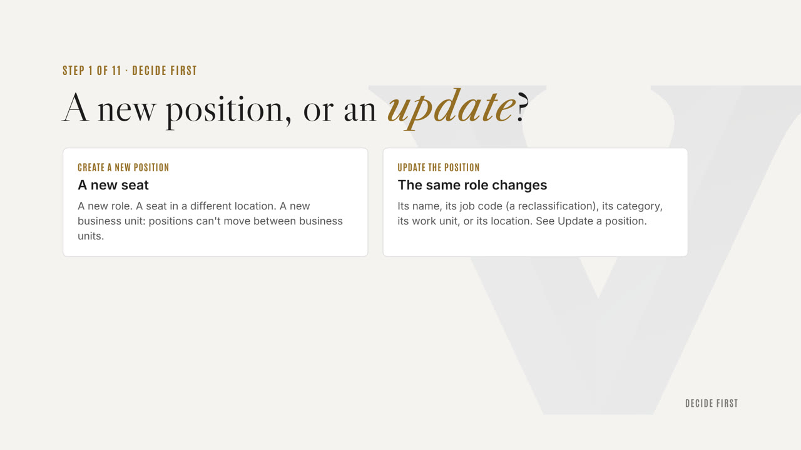
02Open Positions.
Sign in to Oracle Cloud with your VUnetID. On the Home page, go to Our Workforce, scroll to Workforce Structures, and click Positions. Click Search with the status filter set to Active to see every active position in your business unit; the Incumbents column shows who sits in each one.

03Click Add (or Create).
A new position opens at the When and Why section.

04Effective date: today, not the start date.
The position must be approved and active before it can be posted. If someone starts Oct 1, create the position effective today; dating it Oct 1 means it can't be used until Oct 1.

05Status: Active. Action reason: New Position.
New positions always use these two values.

06Business unit, name, and code.
Pick your business unit. Name is what you call the position (for example, Accounting Manager). Code identifies it; note it so you can find the position later.

07Work unit: the department.
Where Oracle says department, it means work unit.

08Job: enter the job code from the pre-search memo.
Search by code, not by name; the code returns the exact job (for example, Accountant Support SS2). The job name becomes the employee's business title and ties the position to Vanderbilt's job architecture, including pay ranges. Leave Manager blank: managers change, and the manager belongs on the assignment.
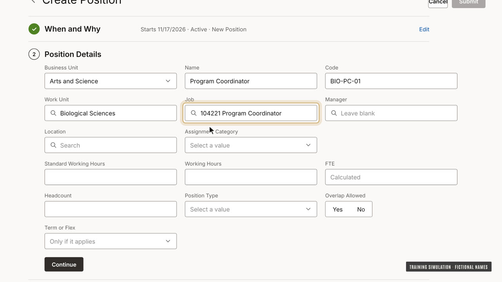
09Location: where the person would sit on site.
Location feeds the requisition and the hire. It decides whether the posting must show a pay range (pay transparency states such as New York and California) and which pay range Compensation recommends. Don't assume Nashville. If the role is remote, the location is overridden on the assignment at hire.

10Assignment category: the one on the memo.
For staff positions, use the category on the pre-search memo. Most used: Professional exempt, Staff non-exempt, and VTS (Vanderbilt Temporary Services). Never Professional salaried non-exempt: it's built into Oracle but not used at Vanderbilt, and the position will be sent back.
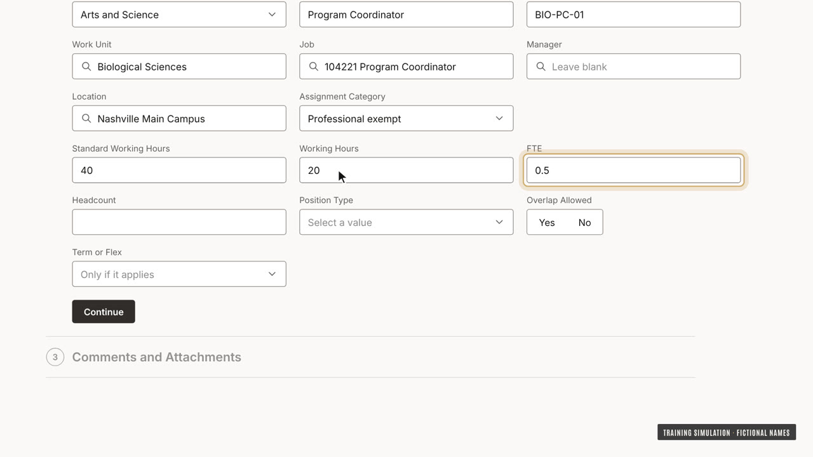
11Hours: keep Standard working hours at 40; set Working hours to the actual hours.
FTE is calculated from standard working hours of 40. Typing 20 into Standard working hours makes the FTE 1 by mistake. For a 20-hour position: Standard 40, Working 20, FTE 0.5. This is the most common position error.

12Headcount and type.
Headcount 1 is Single incumbent. More than 1 is Pool, and the FTE multiplies (3 full-time seats = FTE 3). Vanderbilt doesn't use None or Shared. Seats in different locations need separate single-incumbent positions.

13Overlap allowed: Yes. Then set Term or Flex if it applies.
Overlap lets you recruit and hire into the position while the current incumbent is still on payroll.
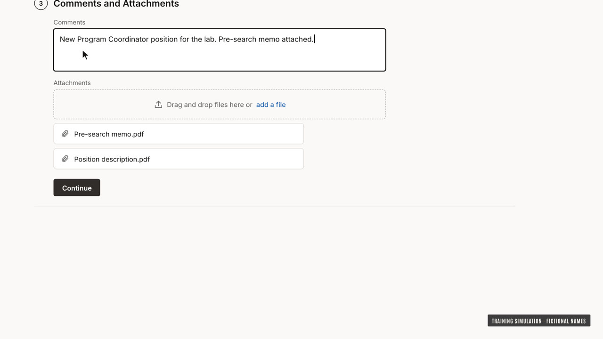
14Attach the documents, add comments, and click Submit.
For a staff position, central HR approves only with the pre-search memo attached (not needed for VTS). The position description helps your business unit approver. Attachments stay on the position, so you keep its history. Approval goes to your business unit approver (often the CFO), then to the central HR approval group.

15Inactivate and reactivate on purpose.
There are good reasons to inactivate a position you are not recruiting for, and to reactivate it when you need it again: it keeps vacant-position rosters accurate. Before you reuse a position, bring it up to current guidelines; an old position that no longer meets them causes send-backs.
16Use the job code from the memo.
Staff and faculty jobs mapped to the job architecture use six-digit codes. Not every job has one yet, for example some student, postdoc, intern, affiliate, and contractor positions.
17Request new positions through VU Compensation.
Send the position description with the Vacant Reclassification/New Position Request Form or the Filled Reclassification Request Form to VU Compensation, not your engagement consultant. Requisitions need a memo from the last 12 months whose job code matches the position.
18Standard working hours are always 40.
Put actual hours in Working hours so FTE is right.
19Leave Manager blank on the position.
Set the manager on the assignment, so the position doesn't hold stale history when managers change.
20Set the real location.
Use the position's primary office location, where most of the work takes place. It drives pay transparency, the pay range, and New York's background check process, and it informs decisions such as capacity, emergency management, and parking. One location per position.
21Fix the position before the requisition.
The requisition snapshots the position at submission, and the hire inherits from the requisition.
22Keep documents on the position.
Attach the memo and position description. They stay with the position as its history.
Position Management
Update a position
Use whenA position's name, job code, category, work unit, or work location changes, such as a reclassification.
- 1
Open the position.
- 2
Choose Update and enter the effective date.
- 3
Pick the action reason that matches the change.
- 4
Change the fields that changed.
- 5
Attach the reclass memo, add comments, and click Submit.
- 6
After approval, update the incumbent's assignment for what didn't flow.
Before you submit
- AttachReclass memo from Compensation, for a reclassification (required). To confirm: What to attach for a position update that is not a reclassification.
- CheckThe action reason matches the change. The new job code, name, and assignment category match the reclass memo. After approval, update the incumbent's assignment for what does not flow: person type, location, working hours, and hourly salary.
- CutoffNo payroll cutoff. Date it today so it can be used.
Watch-outs
- Position changes never reach an existing requisition. The requisition keeps the position as it was when submitted.
- Reclassifications need Compensation's reclass memo before you update the position.
Course: futureslearninghub.github.io/HCM_Academy/courses/update-position/ · Sources: HCM training session 1, positions and pending workers, Sep 8, 2026
Detailed job aid · Update a position
Updating a position, step by step
01Open the position.
Our Workforce > Workforce Structures > Positions. Search for the position and open it.
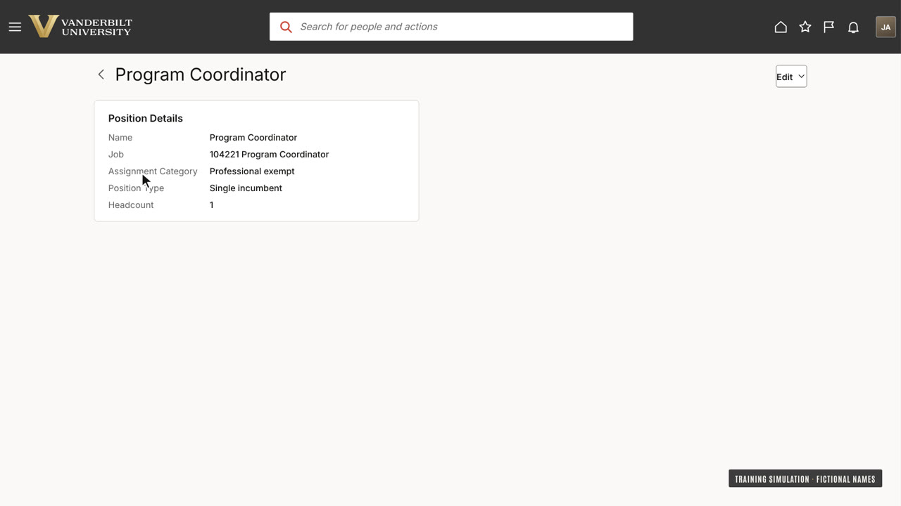
02Choose Update and enter the effective date.
Use the date the change takes effect (for example, Sep 1 for a reclassification).
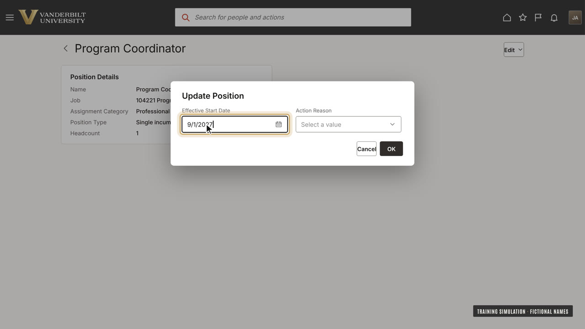
03Pick the action reason that matches the change.
Updates have more reasons than new positions, for example a reclassification to a higher range, an assignment category change, or a work unit or location change. The reason drives reporting.
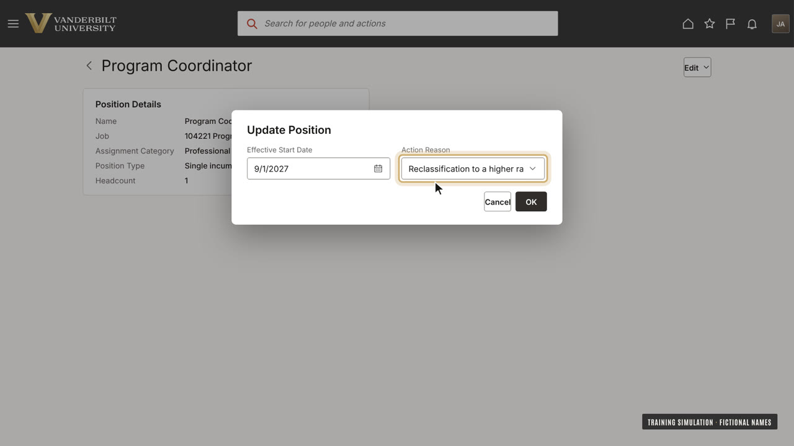
04Change the fields that changed.
For a reclassification, enter the new six-digit job code from Compensation's reclass memo, the new name, and the new assignment category if it changed. Fix anything else that's wrong while you're there, such as headcount type (1 seat = Single incumbent).
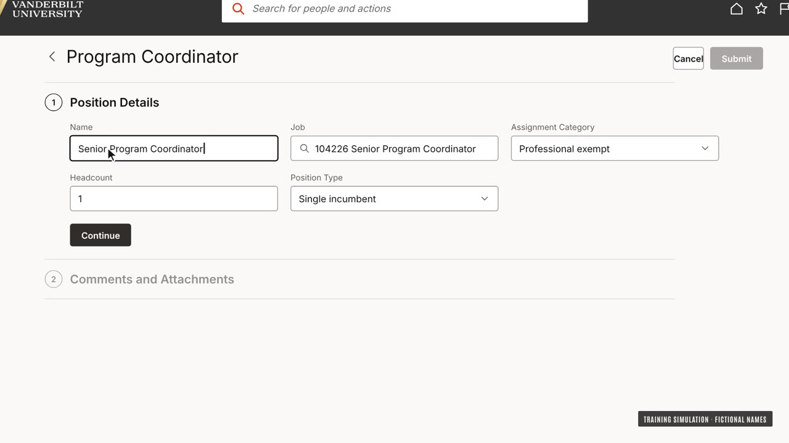
05Attach the reclass memo, add comments, and click Submit.
Approval follows the same path as a new position.
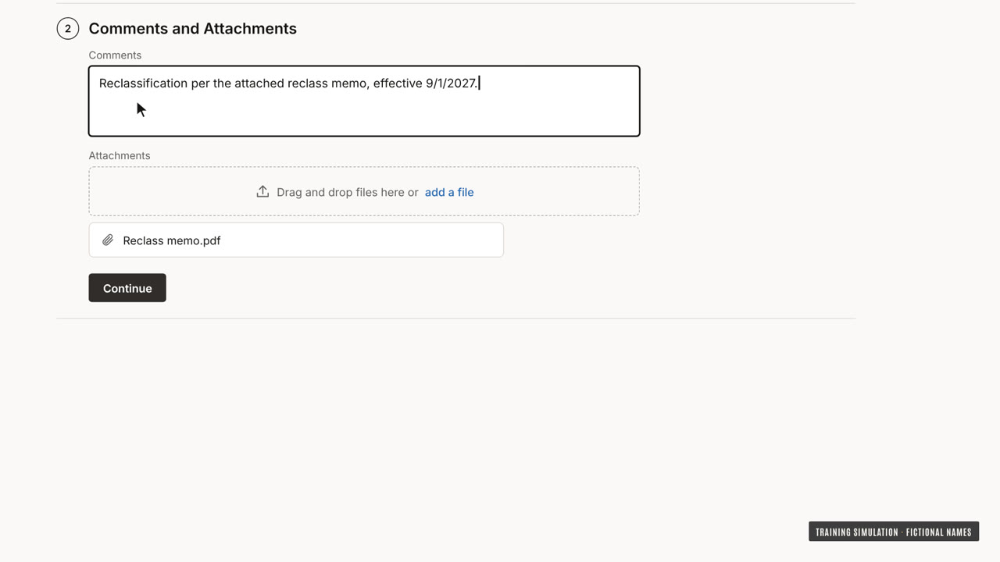
06After approval, update the incumbent's assignment for what didn't flow.
Approved position changes sync to active assignments, but these fields don't: person type, location, working hours, and hourly salary. Open the employee's Employment Info and use Change Assignment (position change within business unit) to update them and the business title.
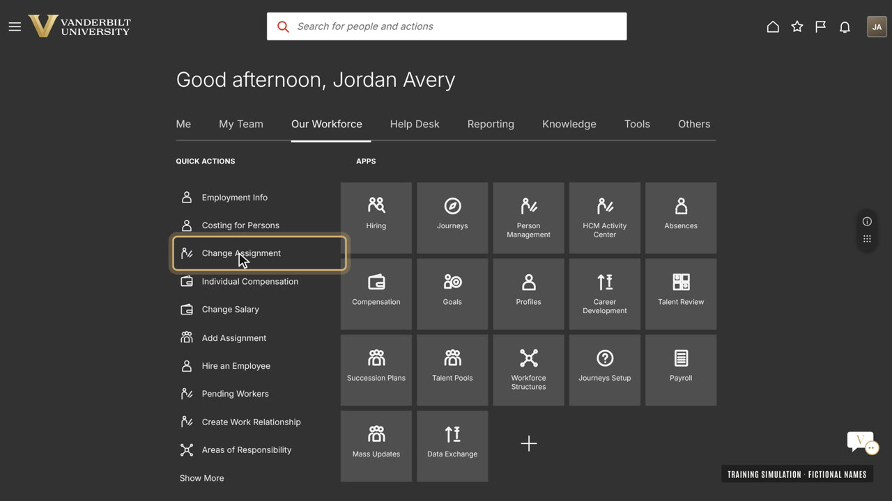
Hiring
Compensation Management: Getting the Compensation Memo
Use whenYou need a new staff or non-exempt position, or a reclassification.
- 1
Write the position description.
- 2
Request the review from VU Compensation.
- 3
Include the work location.
- 4
Compensation sends the memo.
- 5
Use the memo to build the position.
- 6
Attach it to the requisition too.
Watch-outs
- VTS temporary positions don't need a memo.
- A memo older than 12 months means a new request.
- Open item: confirm whether positions that are not staff positions (students, postdocs, interns, affiliates, contractors) need a pre-search memo.
Course: futureslearninghub.github.io/HCM_Academy/courses/compensation-memo/ · Sources: HCM training session 1, positions and pending workers, Sep 8, 2026; HCM training session 2, requisitions and assignment changes, Sep 9, 2026
Detailed job aid · Compensation Management: Getting the Compensation Memo
Getting the compensation memo, step by step
01Write the position description.
Use the standard Vanderbilt position description template.
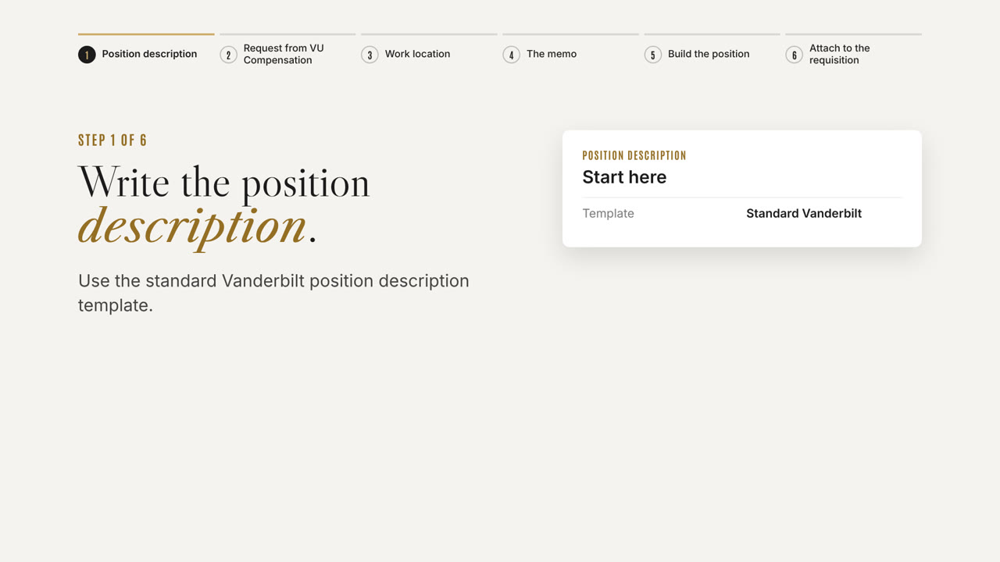
02Request the review from VU Compensation.
Send the position description with the Vacant Reclassification/New Position Request Form (a new or vacant position) or the Filled Reclassification Request Form (a filled position) to the Compensation team (vu.compensation@vanderbilt.edu). New positions are requested through VU Compensation, not your engagement consultant.
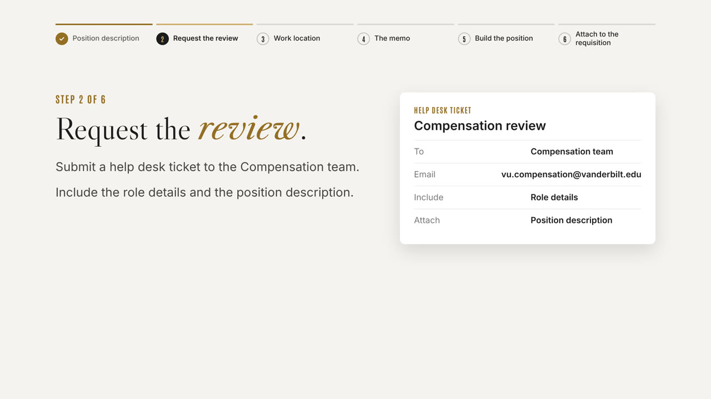
03Include the work location.
The recommended pay range depends on location. Say if the role is for New York, Miami, California, or another campus; don't let it default to Nashville.
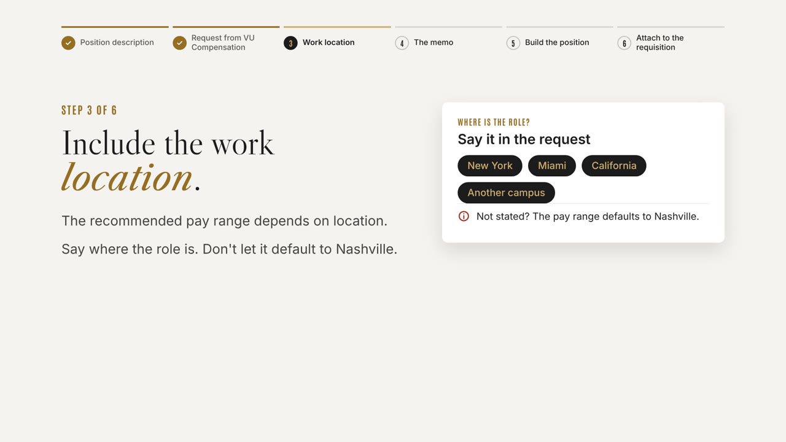
04Compensation sends the memo.
They review market data and internal equity, match the duties to a job in the job architecture, and send the memo: six-digit job code, job name and level, assignment category, and recommended pay range. A reclassification gets a reclass memo instead.
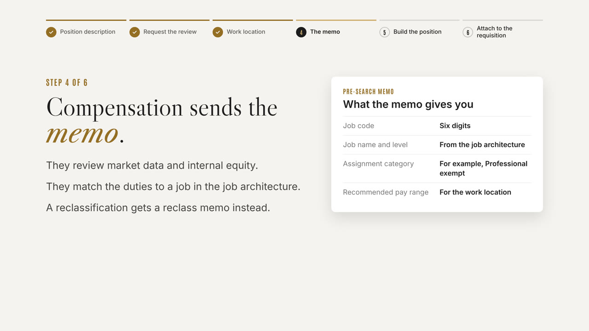
05Use the memo to build the position.
Enter the job code, name, and category from the memo, and attach the memo to the position. Central HR won't approve a staff position without it.
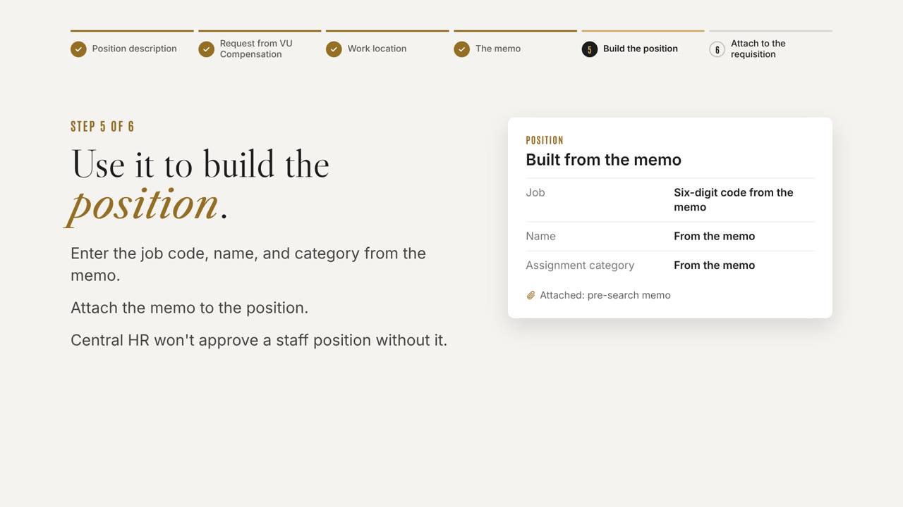
06Attach it to the requisition too.
Central recruiting checks the memo is from the last 12 months and that its job code matches the requisition. If your business unit doesn't want hiring managers to see the full range, send the memo to central recruiting directly instead of attaching it.
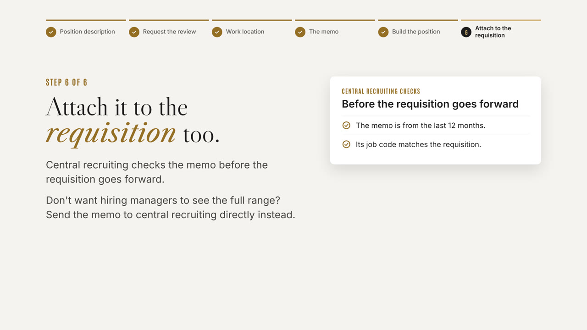
Hiring
Create a requisition
Use whenAn approved position needs to be filled, including through an executive search or an outside search firm.
- 1
Check the position first.
- 2
Open Hiring and click Create.
- 3
Choose Standard and select the position.
- 4
Requisition title: the posting title.
- 5
Justification and openings.
- Each opening is billed, and unfilled openings are billed at 50% to cancel.
- More than one opening also goes to central finance for approval.
- 6
Hiring manager and collaborators.
- 7
Requisition type: Standard or Abbreviated.
- Executive search is only for Cielo's executive search program. An outside firm (such as Korn Ferry) needs a PO requisition, not a recruiting requisition.
- 8
Organization and primary location.
- 9
Required details.
- 10
Description: paste the position description.
- 11
Offer info: workplace type.
Create a requisition · continued
- 12
Attach the position description and pre-search memo.
- 13
Configuration: candidate selection process and background check.
- New York requires non-criminal checks before any conditional offer. The wrong process breaks that law.
- 14
Click Save, then Submit.
- 15
Cielo's executive search program: a recruiting requisition marked Executive search.
- 16
Any other firm (for example, Korn Ferry): a PO requisition, not a recruiting requisition.
- 17
Everything else: Standard or Abbreviated.
Before you submit
- AttachPre-search memo from the last 12 months, with a job code that matches the position (required). Position description (attach).
- CheckThe position is right before you start. The requisition copies it when submitted. Openings are a number, never Unlimited. Location is a real work location, never United States. New York: the New York candidate selection process and account VAN09.
Watch-outs
- Never select Unlimited openings.
- Never use United States as the location.
- New York: New York candidate selection process and account VAN09, every time.
- Confirm with central recruiting before you start an executive search.
Course: futureslearninghub.github.io/HCM_Academy/courses/create-requisition/ · Sources: HCM training session 2, requisitions and assignment changes, Sep 9, 2026
Detailed job aid · Create a requisition
Create a requisition, step by step
01Check the position first.
Confirm it has a six-digit job code and the right location and category. The requisition snapshots the position at submission and can't be changed later, and bad data flows on to the new hire.

02Open Hiring and click Create.
Our Workforce > Hiring > Job Requisitions, then Create at the top. (Or go straight there: Our Workforce > Show More > Create Job Requisition.) You see the requisitions for your business unit, and you're a collaborator on any you create.

03Choose Standard and select the position.
Pipeline is for recruiters only. Pick the position; its job details fill in, and the position can't be changed after this.
04Requisition title: the posting title.
Change it to something candidates understand (for example, add Senior or Hybrid). It's only the posting title, not the business title.

05Justification and openings.
New to the department, or replacing someone. Choose Limited and the exact number of seats. Never Unlimited.
06Hiring manager and collaborators.
Add the hiring manager (not you, unless you are). Add collaborators who should see candidates or interview, including any HCM you work with. Hiring managers see candidates once the recruiter has reviewed them.

07Requisition type: Standard or Abbreviated.
Standard is the full recruiting process. Abbreviated means you already have a candidate, usually internal; it must still be posted internally for five business days.
08Organization and primary location.
Organization is always Vanderbilt. Pick the specific location (Nashville, New York, California, West Palm Beach, and so on), never United States. Location tells recruiting whether pay transparency applies; pay ranges are posted only where required (New York and California).
09Required details.
Fill in what's required: funding source (internal, external, or both; external adds contingent funding language to the offer), driving, replacing a RIF role, fingerprinting, motor vehicle record, and work with minors. Salary range is optional. Skip Tier; it's for billing.
10Description: paste the position description.
Paste it into the description so the recruiter can post it (they can't post from an attachment). You can write different internal and external versions. Let Skills pull through from the job architecture.

11Offer info: workplace type.
Pick On site, Hybrid, or Remote. Skip Grades. Leave Primary work location as it is; it's overridden at hire if the person is remote.

12Attach the position description and pre-search memo.
Central recruiting checks the memo exists, is from the last 12 months, and has the same job code as the requisition.
13Configuration: candidate selection process and background check.
New York requisitions must use the New York candidate selection process; everything else uses Standard. Background check vendor: HireRight. Account: VAN000 for non New York, VAN09 for New York.

14Click Save, then Submit.
Ignore the background check packages pop-up; the recruiter picks packages at the offer. Approval goes to the hiring line manager, your business unit's financial approver, then central recruiting (and central finance if more than one opening). Once approved, you and the recruiter get an email and the recruiter sets up the strategy meeting.
15Cielo's executive search program: a recruiting requisition marked Executive search.
Pick Executive search as the requisition type. A Cielo liaison takes the requisition and a separate Cielo team recruits.
16Any other firm (for example, Korn Ferry): a PO requisition, not a recruiting requisition.
Outside firms are paid differently, so the search can't be a requisition in Oracle Recruiting. Work with your procurement contact on the PO.
17Everything else: Standard or Abbreviated.
Executive search isn't for regular roles. See Create a requisition.
Hiring
Background checks
Use whenYou're hiring someone and need to know when they're cleared to start.
- 1
Set it up on the requisition.
- 2
New York has its own order.
- 3
The recruiter picks the packages at the offer.
- 4
PEBC clears the candidate.
- 5
Then convert the pending worker.
- 6
Not on a requisition? Request it manually.
Watch-outs
- Work with minors = Yes adds a protection of minors check.
- Not sure where a candidate stands? Ask central recruiting before you create a direct hire.
Course: futureslearninghub.github.io/HCM_Academy/courses/background-checks/ · Sources: HCM training session 1, positions and pending workers, Sep 8, 2026; HCM training session 2, requisitions and assignment changes, Sep 9, 2026
Detailed job aid · Background checks
Background checks, step by step
01Set it up on the requisition.
In Configuration, choose the background check vendor (HireRight) and the account: VAN000 for anywhere except New York, VAN09 for New York. Mark Work with minors, Fingerprinting, and Motor vehicle record if the role needs them.
02New York has its own order.
New York requires non-criminal checks before any conditional offer. New York requisitions must use the New York candidate selection process, which sends the candidate to HireRight when they're selected for offer.
03The recruiter picks the packages at the offer.
Which checks run depends on the person (for example, an existing employee may only need a motor vehicle record check). Ignore the packages pop-up when you submit the requisition.
04PEBC clears the candidate.
The pre-employment background check (PEBC) team marks the check cleared. That creates the pending worker, and PEBC emails you that the person is clear to start.
05Then convert the pending worker.
Only convert after the clear to start email. PEBC also records citizenship on the application, which you'll need during conversion.
06Not on a requisition? Request it manually.
For populations hired without a requisition, request the background check manually through Formstack.
Hiring
Convert a pending worker
Use whenYou got the clear to start email and the new hire is in your pending workers list.
- 1
Open Pending Workers.
- 2
Click the three dots next to the person, then Convert.
- 3
Select the sections you'll update.
- 4
When and why: action Hire, reason Employment.
- Service free appointment: only for students receiving a stipend.
- Non-employment: affiliates.
- 5
Check the business unit and position.
- 6
Biographical info: confirm date of birth and citizenship.
- 7
National ID: Social Security number or a placeholder.
- 8
Home address must be in the United States.
- 9
Position overrides: review and continue.
Convert a pending worker · continued
- 10
Assignment: person type, location, minors, expense account, status.
- Location: override to where they'll actually work if remote (for example, Florida).
- Working with minors: required; Yes triggers an additional check.
- Default expense account: your department's usual account.
- Assignment status: Active payroll eligible for anyone paid. Active no payroll only for affiliates; they won't appear in payroll even with a salary.
- 11
Managers and work relationship.
- 12
Payroll details.
- 13
Salary: enter what they'll actually be paid.
- 14
Review compensation, attach the offer letter, and click Submit.
Before you submit
- AttachOffer letter, for your business unit approver (attach). To confirm: The exact payroll elements to confirm at hire are still being documented with the payroll team.
- CheckAction Hire, reason Employment. The other reasons are for students on a stipend and for affiliates. Business unit and position match the offer. Assignment status is Active payroll eligible for anyone who is paid. Payroll details and salary show what the person will actually be paid. Location is where the person will actually work.
- CutoffApproved before the cutoff for the person's pay cycle. No approval, no pay.
Watch-outs
- Never Quick Convert or Edit Pending Worker. Use Convert.
- Active no payroll means no pay at all. Use it only for unpaid affiliates.
- Not sure where a hire or transfer stands? Ask central recruiting before you create a direct hire.
- The citizenship field doesn't look like it needs data. Click the pencil every time.
Course: futureslearninghub.github.io/HCM_Academy/courses/convert-pending-worker/ · Sources: HCM training session 1, positions and pending workers, Sep 8, 2026
Detailed job aid · Convert a pending worker
Converting a pending worker, step by step
01Open Pending Workers.
Our Workforce > Pending Workers. Everyone in your business unit who is ready to convert is listed.

02Click the three dots next to the person, then Convert.
Don't use Quick Convert or Edit Pending Worker. Make every change inside Convert.

03Select the sections you'll update.
Check Payroll details (Vanderbilt calls it payroll relationship) and Salary. Add Compensation if there's a bonus or other payment, and Direct reports if they'll manage people. Click Continue.

04When and why: action Hire, reason Employment.
Hire employment is almost always right.
05Check the business unit and position.
If the position changed after the offer (the recruiter has already sent a new offer letter), select the correct position here. Make any pre-hire corrections at this step.

06Biographical info: confirm date of birth and citizenship.
Date of birth comes from the background check. US citizen or permanent resident looks complete until you click the pencil: always click it and pick Yes or No. PEBC records the answer on the application.
07National ID: Social Security number or a placeholder.
No SSN? Email the International Tax Office (ito@vanderbilt.edu) for a placeholder number, then click the pencil, choose placeholder number, and enter it.

08Home address must be in the United States.
Anyone being paid needs a US address. If you see another country, click Cancel and contact central HR to correct it.

09Position overrides: review and continue.
Shaded fields such as location and working hours can be changed. Check yourself as manager here only if you are their manager.
10Assignment: person type, location, minors, expense account, status.
Set Person type to match the assignment category (for example, Professional exempt = Staff exempt).

11Managers and work relationship.
Click the pencil to set the manager. On work relationship info, choose Include in the new hire report for paid hires, Exclude for affiliates and contractors.

12Payroll details.
Monthly (regular) pays an annual salary. Biweekly is hourly: set overtime to biweekly and Time card required to Yes.
13Salary: enter what they'll actually be paid.
For a 0.75 FTE (30 hours) at $58,000, enter $58,000; use the calculator to confirm. Oracle shows the full-time equivalent for reference.
14Review compensation, attach the offer letter, and click Submit.
Check any payment such as a relocation or sign-on bonus. Attach the offer letter for your business unit approver. Approval: business unit approver, then PEBC, then central HR.
Hiring
Rehires and eligibility for rehire
Use whenA candidate you want to hire used to work at Vanderbilt, or you are terminating someone and need to set the rehire field.
- 1
Know that the rehire field is set at termination.
- Misconduct: No or Not specified, per your PCB consultant.
- 2
Check the former employee's record before you commit.
- 3
Let the recruiter review eligible for rehire.
- 4
Never create a second person record.
- 5
Convert the pending worker as you would any hire.
- 6
Review costing on the new assignment.
| Value on termination | What it means for a rehire |
|---|---|
| Yes | Eligible; recruiter proceeds through the normal process. |
| No | Not eligible without review; talk to the recruiter and your PCB consultant. |
| Not specified | Treat as a flag; ask before moving forward. |
Watch-outs
- The rehire field is only as good as the termination entry. Set it carefully when you terminate someone; recruiters rely on it later.
- Search inactive records before hiring a familiar name. A duplicate person record is hard to undo.
- Open item: confirm with your engagement consultant (EC) who can approve rehiring someone marked No, and how Not specified is handled.
Course: futureslearninghub.github.io/HCM_Academy/courses/rehire-eligibility/ · Sources: Oracle: Rehire a Worker; Oracle: Attributes for Worker Work Relationship; Oracle: How can I access inactive assignments?; Oracle: Redwood Terminate Employment page
Detailed job aid · Rehires and eligibility for rehire
Rehires, step by step
01Know that the rehire field is set at termination.
When an employee is terminated, the termination records whether the person is recommended for rehire. In Oracle the field is Recommended for Rehire: Yes, No, or Not Specified. Oracle can tie the allowed value to the termination reason and records who made the recommendation and why.
02Check the former employee's record before you commit.
Go to Our Workforce > Employment Info and search the person with the option to include terminated work relationships. Review the terminated work relationship and its rehire recommendation.

03Let the recruiter review eligible for rehire.
For hires through a requisition, recruiters review eligible for rehire during the candidate review. If the record says No, stop and talk with the recruiter and your PCB consultant before anyone makes an offer.

04Never create a second person record.
Oracle matches the new hire to existing person records (including previous employees) by name and national identifier. Pick the existing record. A duplicate splits the person's history, pay, and tax records.
05Convert the pending worker as you would any hire.
After the background check clears and PEBC emails clear to start, convert the pending worker. Check that the new assignment, position, location, and pay reflect the new job, not the old one.
06Review costing on the new assignment.
Old costing does not carry the right account for a new job automatically. Check Costing for Persons after the hire. Blank costing means the work unit default is used, which is not an error.
Hiring
Staff
Use whenYou need to hire a staff member and want to see every step from requisition to start date.
- 1
Get the pre-search memo from Compensation.
- 2
Create the position (or update one that fits).
- 3
Create the requisition from the approved position.
- 4
Work with the recruiter through interviews and the offer.
- 5
Wait for background check clearance from PEBC.
- 6
Convert the pending worker.
- 7
Check costing on day one.
Watch-outs
- Most hire problems start at the position. A wrong location, hours, or job code flows into the posting, the offer, and the first paycheck.
- Don't convert until PEBC sends clear to start.
- Open item: confirm with your engagement consultant (EC) any lead times between steps your area should plan for.
Course: futureslearninghub.github.io/HCM_Academy/courses/hire-staff/ · Sources: Vanderbilt HCM training sessions; Oracle: How You Convert Pending Workers
Detailed job aid · Staff
Hiring staff, from memo to day one
01Get the pre-search memo from Compensation.
Email vu.compensation@vanderbilt.edu. The memo gives the six-digit job code, title, level, and assignment category. See: Compensation Management: Getting the Compensation Memo.
02Create the position (or update one that fits).
Use the memo's job code, Standard working hours 40, the real location, and attach the memo. Don't repurpose a position built for another worker type, and reuse an inactive position only if it meets current guidelines. See: Create a position.
03Create the requisition from the approved position.
The requisition copies the position, so fix the position first. Location drives whether a pay range must be posted. See: Create a requisition.
04Work with the recruiter through interviews and the offer.
The recruiter manages candidates and the offer in Oracle Recruiting. If the position changes after the offer, the recruiter issues a new offer letter.
05Wait for background check clearance from PEBC.
Staff need an I-9 and a background check. For staff on a requisition, the check is automated in Oracle Recruiting (vendor HireRight). PEBC emails you clear to start. See: Background checks.
06Convert the pending worker.
Our Workforce > Pending Workers > three dots > Convert. Hire reason Hire employment, status Active payroll eligible, US home address, include in the new hire report. See: Convert a pending worker.
07Check costing on day one.
Open Costing for Persons for the new hire and confirm the account. Blank costing uses the work unit default. See: Enter costing for a person.
Hiring
Interns (Paid and Unpaid)
Use whenSomeone wants to bring on an intern, and you need to know whether the person must be paid and how to set them up.
- 1
Start with one question: will the intern be paid?
- 2
For an unpaid internship, apply the primary beneficiary test.
- Clear understanding that there is no pay.
- Training similar to an educational setting.
- Tied to coursework or academic credit, and to the academic calendar.
- 3
Check that the intern does not displace paid work.
- 4
Limit the internship to its learning period.
- 5
If the test is unclear, treat it as paid and ask.
- 6
Set up the person with the right worker type and checks.
| Item | Paid intern | Unpaid intern |
|---|---|---|
| Status | Employee | Not an employee only if the intern is the primary beneficiary |
| Pay | At least minimum wage and overtime | None; no expectation of pay |
| Setup in Oracle | Hire for the worker type | Open item: confirm category with your EC |
Watch-outs
- An unpaid intern who does regular work for the department may legally be an employee. Decide before the start date, not after.
- Open item: confirm with your engagement consultant (EC) which Oracle worker type and category Vanderbilt uses for paid and unpaid interns, and which checks apply.
- Open item: confirm with your EC whether any state where the intern works has stricter internship rules.
Course: futureslearninghub.github.io/HCM_Academy/courses/hire-interns/ · Sources: DOL: Fact Sheet #71, Internship Programs Under the FLSA; DOL: Field Assistance Bulletin 2018-2
Hiring
Non-Workers
Use whenSomeone needs access but isn't an employee and won't be paid.
- 1
Hire reason: Non-employment.
- 2
Assignment status: Active no payroll.
- 3
Work relationship: Exclude from the new hire report.
Watch-outs
- Never use Active no payroll for someone who should be paid. They won't be.
- Affiliates on campus need a background check but not an I-9.
- Open item: confirm with HRIS when to use Add a Nonworker or Add a Contingent Worker (Our Workforce > Show More > New Person) instead of converting with the Non-employment reason.
Course: futureslearninghub.github.io/HCM_Academy/courses/hire-non-worker/ · Sources: HCM training session 1, positions and pending workers, Sep 8, 2026
Detailed job aid · Non-Workers
Converting a non-worker, step by step
01Hire reason: Non-employment.
In When and why, pick the non-employment reason for affiliates, not Hire employment.
02Assignment status: Active no payroll.
This keeps them out of payroll even if a salary or payroll relationship is on the record.
03Work relationship: Exclude from the new hire report.
Paid hires are included; affiliates, observers, and contractors are excluded.
02
Section 02
Payroll & Timecards
Getting time approved and pay right every cycle.
- Payroll essentials: your role, pay rules, and common errors115
- UKG time cards: the weekly check, edits, and time off120
- Request an off-cycle payment129
- Process grossed-up additional compensation130
- Add a one-time payment (such as a sign-on bonus)131
- Add a staff supplement132
Payroll & Timecards
Payroll essentials: your role, pay rules, and common errors
Use whenYou are new to the HCM role, you are not sure whether a pay issue is yours, or you want to check your work before a cutoff.
- 1
All new hires: you own the hire.
- Process the hire correctly.
- Confirm every payroll element is on the record.
- 2
Exempt (monthly) staff: hands off, with two exceptions.
- Add a compensation payment when needed, such as a lump sum.
- Work an issue with payroll when one comes up.
- 3
Weekly and biweekly employees: check time cards every week.
- Confirm every time card is submitted.
- Follow up with line managers on missing or late time cards.
- Payroll usually notifies the line manager when a time card isn't approved.
- Escalate errors you can't resolve to payroll.
- 4
Errors: you fix them, and work with payroll when you need more information.
- 5
Start with who the rules apply to.
Payroll essentials: your role, pay rules, and common errors · continued
- 6
Overtime: more than 40 hours worked in a workweek.
- Over 40 hours worked in the workweek: overtime.
- Weekend or holiday work by itself: not overtime under federal law.
- 7
Count each workweek on its own.
- 8
Count hours worked, not hours paid.
- 9
Holidays: paid by policy, not by federal law.
- 10
Shift differentials: paid by policy, and they raise the overtime rate.
- 11
On-call time: it depends on how free the employee is.
- Required to stay at the work site: hours worked.
- At home and free to use the time: generally not hours worked.
- Called in to work: the time spent working counts.
- 12
Unapproved overtime still gets paid.
- 13
Check the time card, then ask payroll.
- 14
The salary basis decides how pay is stored.
- 15
Saving a salary change writes the person's element entry.
- 16
The effective date says when the pay is earned; the cutoff says when it is paid.
- Check the payroll calendar, not memory
- 17
Backdated changes pay through retroactive processing.
- 18
Some earnings are set to Process separately.
- 19
Confirm the result before payday.
- 20
Check costing with every pay change.
- 21
A paid person set to Active no payroll.
- 22
A change still pending at the cutoff.
Payroll essentials: your role, pay rules, and common errors · continued
- 23
The wrong effective date.
- 24
Amount and Net mixed up on a one-time payment.
- 25
A supplement that never ends.
- 26
Hours changed without the salary, or the salary without the hours.
- 27
A missing or unapproved time card.
- 28
Terminate Employment used when the person keeps another job.
- 29
Costing left as it was after a move.
- 30
A wrong value on a position.
Payroll essentials: your role, pay rules, and common errors · continued
Watch-outs
- HCMs can't run or rerun payroll. That is payroll's job.
- Open item: Payroll is still documenting which payroll elements you should confirm on the record at hire.
- Open item: confirm whether line managers or HCMs keep up with late and missing time cards, since payroll usually notifies the line manager.
- These are the federal rules. A state where the employee works can require more.
- Never remove or reduce hours an employee worked to avoid overtime.
- Open item: Vanderbilt's rule on whether paid time off and holidays count toward overtime, and which seven days make the overtime workweek. The published calendar shows weekly pay periods running Monday to Sunday and biweekly periods Sunday to Saturday.
- Open item: Vanderbilt's holiday pay rules, shift differential rates, on-call and call-back pay, and the UKG pay code for each. Payroll is documenting these.
- Pending approvals do not pay. A change still waiting in approvals at cutoff misses that payroll.
- Retro only covers elements set up for retroactive pay. Do not promise a retro amount; payroll calculates it.
- Open item: confirm with payroll which Vanderbilt earnings use Process separately and how retro shows on the payslip.
- Close to the payroll deadline, you can email payroll and ask them to put a payment on their watch list.
- Fixes after payroll runs become retro adjustments in a later payroll and may mean a late or incorrect paycheck.
- If you find one of these after payroll has run, bring payroll the facts. Do not try to correct the pay yourself.
- Open item: Payroll to supply the errors it corrects most often, with counts, so this list can be ranked and kept current.
Course: futureslearninghub.github.io/HCM_Academy/courses/hcm-role-in-payroll/ · Sources: Payroll SME session, Oct 19; DOL: Fact Sheet #23, Overtime Pay Requirements of the FLSA; DOL: Fact Sheet #22, Hours Worked Under the FLSA; DOL: Fact Sheet #56A, Overview of the Regular Rate of Pay Under the FLSA; DOL: Holiday Pay; Oracle: How You Store the Salary Amount and Pass It to Payroll for Processing; Oracle: How Retroactive Pay Is Calculated; Oracle: How do I define earnings elements for the US; HCM Academy courses (each error names its course); HCM SME walkthrough, Oct 20
Payroll essentials: your role, pay rules, and common errors
| Situation | Typical result |
|---|---|
| Approved before cutoff, effective this period | Paid this period |
| Approved after cutoff, effective this period | Paid next period with retro |
| Effective date in a past, paid period | Retro difference paid in a later run |
| Hourly rate change, non-exempt | Applies to approved UKG hours in the period |
Payroll & Timecards
UKG time cards: the weekly check, edits, and time off
Use whenEvery week for your non-exempt employees, or when you need to enter hours or PTO for an employee who can't.
- 1
Open UKG from Oracle.
- Don't see UKG on the Me tab? Select + under Apps; it may be one of the apps not shown.
- 2
Open the current pay period for your employees.
- Filter: in the row under the column headings, type your business unit under Business Unit (or your work unit under Work Unit), then select Refresh.
- 3
Review each employee's punches.
- 4
Compare the punches to the employee's schedule.
- 5
Confirm every time card is complete and approved.
- 6
Missing or late time card: contact the line manager.
- 7
An error you can't resolve: contact payroll.
- 8
Open UKG from Oracle.
- Don't see UKG? Select + under Apps; it may be one of the apps not shown.
UKG time cards: the weekly check, edits, and time off · continued
- 9
Know the approval chain.
- Employee submits
- Line manager approves
- Payroll signs off
- 10
Open the time cards for your employees.
- Filter: type your business unit under Business Unit (or your work unit under Work Unit), then select Refresh.
- Tip: filter by Approval State to find time cards that should be submitted and aren't.
- 11
Check each employee's status, hours, and exceptions.
- 12
Submit for an employee who couldn't.
- 13
Enter hours or PTO for an employee.
- Then select Save at the top right. In an open period, Save only; don't Submit.
- 14
Confirm the entry saved.
- 15
Time off requests: check what's pending.
- 16
Use schedules where they exist.
- 17
Follow up until every time card is approved.
- 18
Help employees with their own time cards.
UKG time cards: the weekly check, edits, and time off · continued
Before you approve
- AttachNone. The approved time card is the record.
- CheckExceptions such as a missing punch are resolved before you approve. You are in the completed pay period, not the open one. Hours and pay codes match what the employee worked. You did not submit this time card yourself. The person who submits a time card does not approve it.
- CutoffDue at noon on the Monday after the pay period ends. Holiday weeks move it.
Watch-outs
- Empty time cards early in an open period are normal.
- In an open period, Save. Don't Submit. Submitting means you must edit, update, and resubmit later.
- One person does not both submit and approve the same time card. If you submit a time card for an employee, the manager approves it, not you.
- Open item: Payroll to confirm the rule that the person who submits a time card does not approve it, and who approves when the manager is out.
- Open item: add the UKG report that lists time cards not yet submitted, and how to schedule it.
- Exempt employees' time off is managed in Oracle, not UKG.
- Open item: confirm the label for turning down a time off request (Refuse or Reject).
- Open item: document how a manager approves every line an employee submitted (select all, approve, then submit or approve again).
- Open item: add how to add a schedule in UKG, and how to save a view that lists your student workers first.
Course: futureslearninghub.github.io/HCM_Academy/courses/ukg-time-cards/ · Sources: Payroll SME session, Oct 19; HCM SME walkthrough, Oct 20; Vanderbilt SME review, November 2026; Review and approve time cards, Enter PTO, and the UKG manager and employee courses (HCM Academy, earlier edition)
UKG time cards: the weekly check, edits, and time off
| State | What it means for you |
|---|---|
| Open | Not submitted yet; follow up with the employee and line manager |
| Submitted | The employee is done; the line manager still needs to approve |
| Approved (PayPrep Ready) | Ready for payroll; no action needed |
Detailed job aid · UKG time cards: the weekly check, edits, and time off
Managing time cards and PTO in UKG
01Open UKG from Oracle.
On the Oracle Home page, on the Me tab, under Apps, select UKG (Kronos) Timesheets.
02Open the pay period list.
On the UKG Home page, scroll down to Links and select By Pay Period. Timesheets (By Pay Period) opens on the most recently completed pay period.
03Filter to your employees.
Use the filter row under the column headings. In this example, type the business unit under Business Unit, then select Refresh (the circular arrow at the right) to update the list.
04Choose the pay period.
Use the arrows to the left and right of Pay Period to move between periods. The date range shows the period you're reviewing.
05Approve or edit time cards.
Entering time is the employee's job. To act on a time card, check the box next to the employee's name, then choose Submit, Approve, or Reject at the top. To enter time for them (a system glitch, or a secondary time type such as PTO), open the time card, enter the time, and click Save. In an open pay period, don't Submit; you'd have to edit, update, and resubmit it later.
06Open the time card to enter PTO.
With the box next to the employee's name checked, select View. Their time card opens in Timesheet Edit.
07Add a row on the day.
Find the day and click + to add a row. The new row shows the employee's assignment.
08Enter the hours.
Non-exempt PTO can be entered in 4-hour increments. Enter From and To, for example 8:00 am to 12:00 pm.
09Choose the PTO type.
Raw Total shows 4.00. In the Time Off column, click Browse and pick the pay code, for example PTO-Vacation.
10Save. Don't Submit.
Scroll up and click Save at the top right of Timesheet Edit. In an open pay period, leave it saved; don't Submit.
Payroll & Timecards
Request an off-cycle payment
Use whenA transaction failed to pay and it was not the employee's fault.
- 1
Submit, or resubmit, the Oracle transaction, and wait for full approval.
- Check its status: select the bell, then See more. On the notifications page, the Created by me tab shows what you submitted. Open it; the bottom of the window shows where it is in approval.
- 2
Open the off-cycle paycheck request form.
- 3
Select the reason.
- 4
Confirm it meets the criteria shown on the form.
- 5
Submit the form.
- 6
Let payroll review it.
- Close to the payroll deadline, you can email payroll and ask them to put the payment on their watch list.
- 7
Confirm the payment.
Before you submit
- AttachThe off-cycle paycheck request form (required).
- CheckThe Oracle transaction is submitted or resubmitted first. The request meets the criteria shown on the form. The reason matches what went wrong. Payroll has the employee's name and ID, and when the transaction will be approved.
- CutoffNoon two days before the off-cycle run, and only once the Oracle transaction is approved.
Watch-outs
- The form and the Oracle transaction go together. One without the other won't pay.
- Off-cycle is the only way exempt staff are paid outside the monthly payroll.
- The HR/Payroll Calendar lists the off-cycle paycheck dates, usually two a month. The cutoff for each is noon two days before.
- Open item: list when to use each reason on the form.
Course: futureslearninghub.github.io/HCM_Academy/courses/off-cycle-payment/ · Sources: HCM SME walkthrough, Oct 20
Compensation Management
Process grossed-up additional compensation
Use whenThe employee should take home an exact amount of additional compensation.
- 1
Open Individual Compensation for the employee.
- Or: Quick Actions > Individual Compensation > select the employee.
- 2
Click Add, then choose One-time or recurring payment.
- 3
Plan: Lump sum payment.
- 4
Start date: the first day of the target payroll month.
- 5
Enter the amount in the Net field (for example, $500).
- 6
Leave Process separately set to Yes.
- 7
Click Save.
- 8
Click Continue, add comments and documentation, then Submit.
Before you submit
- AttachThe manager's request (email or memo), saying what the payment is for (attach).
- CheckPlan is Lump sum payment. The amount is in Net, not Amount. Net is take-home. Start date is the first day of the target payroll month. Past the cutoff, date it for next month. Process separately is left at Yes unless payroll tells you otherwise.
- CutoffFully approved by the HCM Transaction Cutoff (the 18th in most months, earlier in December). Pending approvals do not pay.
Watch-outs
- Missed the cutoff (around the 18th)? Date it for next month.
- Only change Process separately if payroll tells you to.
- Pay goes to direct deposit, which is required.
- Set the effective as-of date in Individual Compensation before you search for the employee. Otherwise you can't pick an earlier start date.
- Attach the manager's request (email or memo) and say what the payment is for, so the approver doesn't send it back.
- Open item: how you know when to ask payroll about Process separately.
- Open item: confirm with payroll that two payments for the same month can't be on the same assignment.
Course: futureslearninghub.github.io/HCM_Academy/courses/net-one-time-stipend/ · Sources: HCM SME walkthrough, Oct 20
Compensation Management
Add a one-time payment (such as a sign-on bonus)
Use whenA taxable one-time payment needs to be added, such as a sign-on bonus left off the offer.
- 1
Open Individual Compensation for the employee.
- 2
Click Add, then choose One-time or recurring payment.
- 3
Plan: pick the payment type, such as Bonus.
- 4
Start and end dates: the target payroll month.
- 5
Enter the amount in the Amount field, not Net (for example, $1,500).
- 6
Leave Process separately set to Yes, then click Save.
- 7
Click Continue, add comments and attachments, then Submit.
Before you submit
- AttachOffer or bonus letter; the signed letter filed as a Compensation Letters document record (if finance asks). To confirm: Whether the letter is required for every one-time payment.
- CheckIt is not already on the offer. Adding it to the offer is the preferred path. The amount is in Amount, not Net. Amount is gross. Start date is the first day of the target payroll month. Process separately is left at Yes.
- CutoffFully approved by the HCM Transaction Cutoff (the 18th in most months, earlier in December). Pending approvals do not pay.
Watch-outs
- Set the effective as-of date in Individual Compensation before you search for the employee. Otherwise you can't pick an earlier start date.
- Adding the bonus to the offer is the preferred path. It processes in one transaction and reduces Oracle failures.
- Amount = gross. Net = take-home. Mixing them up changes what the employee receives.
- Open item: add the award compensation guide to this course.
- Open item: confirm whether this course covers bonuses for students as well as staff.
Course: futureslearninghub.github.io/HCM_Academy/courses/sign-on-bonus/ · Sources: HCM SME walkthrough, Oct 20; Award Compensation Elements Resource Guide (updated 01/17/2023)
Compensation Management
Add a staff supplement
Use whenSomeone takes on extra duties for a period of time.
- 1
Open Individual Compensation for the employee.
- 2
Click Add, then choose Add staff supplement.
- 3
Plan: choose the supplement type.
- 4
Enter the amount.
- 5
Leave Process separately set to Yes.
- 6
Start date: the first day of the target payroll month (for example, Nov 1).
- 7
Set the end date.
- Unknown end: leave Ongoing on.
- Known end: turn Ongoing off and enter the end date (for example, Dec 31).
- 8
Click Save and confirm every field.
- 9
Click Continue for comments or attachments, then Submit.
| Plan (code) | Use for |
|---|---|
| Administrative Supplement (ADS) | Acting or interim in an administrative vacancy while a search runs. Expected less than a year. |
| Interim Appointment Supplement (INTERIM) | Same situation, expected 12 months or more. |
| Temporary Supplement (TEMPSUP) | Short-term additional responsibilities. |
| Not for | Faculty, post-docs, students, or temps. Faculty have their own supplements. |
Before you submit
- AttachInterim pay letter, filed as a Compensation Letters document record (if finance asks). To confirm: Whether the letter is required for every supplement.
- CheckThe plan is the supplement your FUM asked for. The amount is per payroll, and it is filled in. Start date is the first day of the target payroll month. An end date is set, or Ongoing is on with a reminder to end it.
- CutoffFully approved by the HCM Transaction Cutoff (the 18th in most months, earlier in December). Pending approvals do not pay.
Watch-outs
- Ongoing supplements keep paying until someone ends them. Set a reminder.
- Guide dated 01/17/2023. Confirm current plan names with finance.
Course: futureslearninghub.github.io/HCM_Academy/courses/staff-supplement/ · Sources: HCM SME walkthrough, Oct 20; Award Compensation Elements Resource Guide (updated 01/17/2023)
03
Section 03
Assignments
Changes for people already in a job: assignment updates, transfers and promotions, and leaving.
- Change Assignment134
- Change Working Hours138
- Change salary139
- Direct Reports140
- Promote146
- Transfers and promotions: with or without a requisition147
- Voluntary termination148
- Reduction in force (RIF)149
- Involuntary termination (misconduct)150
- End an assignment or terminate employment, including multiple assignments151
- Offboarding process requirements152
Assignment Changes
Change Assignment
Use whenAn employee's assignment needs a broader update, or several changes in one transaction. For one change that has a direct action, use that action instead.
- 1
Open the employee's Employment Info.
- 2
Pick a direct action or Change Assignment.
- One change with a direct action (Change Manager, Change Location, Direct Reports, Change Working Hours): the three-dot menu
- Broader changes, or several fields at once: Change Assignment
- 3
Select the sections this transaction needs, then Continue.
- Manager
- Salary
- Direct Reports
- Payroll Details
- Compensation
- Comments and Attachments
- 4
Enter the effective date.
- 5
Choose the type of change, then the action reason.
- 6
Check the Position Override toggles.
- On (blue): take the value from the position
- Off (gray): keep the assignment's current value
Change Assignment · continued
- 7
Verify the manager before the position overrides it.
- 8
Update the fields that are changing, including the Business Title.
- 9
Fill in the required assignment information.
- 10
After a reclassification, check the fields the position may not update.
- 11
Review, submit, and track approval.
Change Assignment · continued
Before you submit
- AttachNone named yet. To confirm: No document is named for this transaction yet.
- CheckFor one change that has a direct action (manager, location, working hours, direct reports), use that action instead. The effective date is when the change takes effect. The payroll calendar shows which payroll processes it. Salary is selected and reviewed if the change affects pay. Position Override toggles are checked, especially Manager Name. After a reclassification: fields the position may not update are checked (which ones is to confirm).
- CutoffFully approved by the HCM Transaction Cutoff (the 18th in most months, earlier in December). Pending approvals do not pay.
Watch-outs
- Change Assignment is the whole transaction; Assignment Change is one type of change inside it. Leave Status is a separate type with its own action reasons, so don't look for it under Assignment Change.
- Don't let a position override replace the employee's real manager. Check Manager Name before you leave its toggle on.
- One employee can have three different titles: Position, Job, and Business.
- Open item: confirm whether moving an employee to another position in the same business unit uses Assignment Change (reason Position Change Within a Business Unit) or Transfer. The course and knowledge check will be updated once it is confirmed.
- Open item: confirm which sections (Manager, Salary, Direct Reports, Payroll Details, Compensation, Comments and Attachments) are required, optional, or conditional for each type of change.
- Open item: confirm the full list of assignment fields HCMs must maintain, such as work-from-home status, manager status, remote or hybrid work, working with minors, and driving for the university. Until it is confirmed, ask HRIS rather than deciding which fields are required.
- Open item: confirm how the effective date, the payroll cutoff, and payroll processing relate when a change is entered after the monthly (exempt) cutoff. Missing the cutoff should not be read as changing the effective date.
- Open item: confirm which fields must be updated by hand on the assignment after a position reclassification.
- Open item: confirm what belongs in Official Documentation, when to use it, whether it is required, and how it differs from Comments and Attachments.
- Open item: confirm which assignment transactions need approval and which do not (for example, Change Manager).
Course: futureslearninghub.github.io/HCM_Academy/courses/change-assignment/ · Sources: HCM training session 2, requisitions and assignment changes, Sep 9, 2026
Change Assignment
| Title | What it is |
|---|---|
| Position Title | The name given to the position |
| Job Title | The Job Architecture (job code) title tied to the position |
| Business Title | The department's working title. You can update it on the assignment. |
Assignment Changes
Change Working Hours
Use whenAn employee's scheduled hours or FTE change.
- 1
Decide which scenario you're in.
- Working hours only: Change Working Hours
- Working hours and salary: Change Assignment with Salary
- 2
Working hours only: open Employment Info, then the three-dot menu.
- 3
Working hours only: enter the effective date and the new hours, then submit.
- 4
Working hours and salary: open Employment Info and choose Change Assignment.
- 5
Working hours and salary: enter the effective date, then Assignment Change and the action reason.
- 6
Working hours and salary: change the hours, then the salary.
- 7
Working hours and salary: add comments and documents, then submit.
| Exempt (salaried) | Non-exempt (hourly) | |
|---|---|---|
| Pay is based on | A salary for the FTE | An hourly rate for hours worked |
| When hours change | The salary may need to change too | The hourly rate generally stays the same |
| Usual path | Change Assignment with Salary, when the salary changes | Change Working Hours |
| Moving between exempt and non-exempt | Include Payroll Details | Include Payroll Details |
Before you submit
- AttachThe approval or agreement for the change (attach).
- CheckThe right path: Change Working Hours when only hours change; Change Assignment with Salary when salary changes too. Working hours hold the new weekly hours. Standard working hours stay at 40. FTE recalculated as expected (for example, 30 of 40 = 0.75). If salary changed: prorated or the agreed amount entered, with a comment saying what changed and why.
- CutoffFully approved by the HCM Transaction Cutoff (the 18th in most months, earlier in December). Pending approvals do not pay.
Watch-outs
- Change Salary with the reason Change in working hours changes only the salary. The hours need their own transaction, so when both change, use Change Assignment with Salary.
- An FTE change can affect benefits and PTO, not only pay.
- Open item: confirm that Change Assignment is the right process when both working hours (FTE) and salary change.
- Open item: confirm the action reason for a combined working hours and salary change.
- Open item: confirm when an exempt employee's salary should change because their FTE changes, and when an hours change needs no salary or hourly rate change.
- Open item: confirm when Payroll Details must be included, and any other differences between exempt and non-exempt employees.
- Open item: confirm the benefits and PTO impacts of an FTE change to explain in this course.
Course: futureslearninghub.github.io/HCM_Academy/courses/change-working-hours/ · Sources: HCM training session 2, requisitions and assignment changes, Sep 9, 2026
Assignment Changes
Change salary
Use whenA salary changes outside the annual increase process.
- 1
Open Change Salary for the employee.
- Quick Actions > Change Salary > select the employee, or
- Search the employee's name > Change Salary.
- 2
Enter the effective date: when the new salary starts.
- 3
Action: Change salary. Pick the reason.
- 4
Click Continue.
- 5
Enter the new salary.
- A new amount (for example, $85,000), or
- A percentage increase (for example, 2%).
- 6
Review, then click Continue.
- 7
File the supporting document on the personnel record.
- 8
Add comments and attachments, then click Submit.
| Reason | When |
|---|---|
| Retention | Keeping a flight risk. The most common outside annual increases. |
| Reclass | Role reclassification. Also common. |
| Market | Pay adjusted to market. Less common. |
| Counteroffer, Equity | As named. |
| Central HR update | Catch-all that needs documentation. Used for an FTE drop, such as 1.0 to 0.75 for an accommodation. |
| Exempt / non-exempt change | Status change in either direction (FLSA exempt salary or FLSA non-exempt hourly). |
| Change in working hours | Salary only. Change the hours too: use Change Assignment with Salary selected. |
| Annual increase | Only in the annual increase process, not for off-cycle changes. |
Before you submit
- AttachSigned letter (for example, a retention letter), filed as a Compensation Letters document record (attach). Comments and attachments your finance approver expects (if finance asks). To confirm: Which salary change reasons require which document.
- CheckThe effective date is when the new salary starts. The reason matches the change. Annual increase and union reasons are not for off-cycle changes. The new amount or percentage is right. Hours changing too? Use Change Assignment with Salary selected.
- CutoffFully approved by the HCM Transaction Cutoff (the 18th in most months, earlier in December). Pending approvals do not pay.
Watch-outs
- Annual increases and union requests have their own reasons. Don't use them for off-cycle changes.
- Direct-hire reasons (no requisition) appear in the list. Ignore them here.
- Oracle needs little in comments and attachments, but many departmental finance approvers want more. Confirm what your FUM (financial unit manager) expects before you submit.
- The monthly (exempt) HCM Transaction Cutoff is the 18th in most months and earlier in December. The HR/Payroll Calendar is the source of truth.
- Open item: explain when to use the supporting documents section and when to use attachments.
Course: futureslearninghub.github.io/HCM_Academy/courses/change-salary/ · Sources: HCM SME walkthrough, Oct 20; Personnel Files: Document Records, Oracle User Guide
Assignment Changes
Direct Reports
Use whenA manager is leaving, moving, or handing off their team, and their direct reports need a new manager.
- 1
Decide: one employee or a whole team?
- One person: Change Manager
- A manager's team: Direct Reports
- 2
Open Direct Reports from Our Workforce.
- 3
Set the effective date.
- 4
Select the reports to move and the new manager for each.
- 5
Review, submit, and confirm.
Watch-outs
- Do this before you terminate the manager. Reports left on a terminated manager leave approvals with no one to act on them.
- Oracle moves at most 50 reports at a time on these pages. Split larger teams into batches.
- Open item: confirm whether a new manager needs a manager role or UKG approver setup at Vanderbilt; Oracle notes the Direct Reports task does not grant manager roles.
Course: futureslearninghub.github.io/HCM_Academy/courses/direct-reports/ · Sources: Oracle: How You Reassign Direct Reports; Oracle: What's the difference between the Change Manager and Direct Reports functionality?; Oracle: Redwood Experience for Direct Reports Process (24A)
Detailed job aid · Direct Reports
Moving a team with Direct Reports
01Open the Our Workforce tab.
On the Oracle Home page, select the Our Workforce tab.
02Select Show More.
Under Quick Actions, select Show More.
03Select Direct Reports.
Under Employment, select Direct Reports.

04Find the current manager.
Search for the manager whose reports are moving, by name or person number, and select them.

05Set the effective date.
Enter the date the new manager takes over. If the current manager is leaving, use a date on or before their last day. Oracle lets you use one date for everyone or a different date per report. Select Continue.
06Select the reports to move.
Existing Reports lists who reports to the manager on that date. Select the people who are moving.

07Assign the new manager.
Search for the new manager and select them. You can send everyone to one manager or split them. Select Continue.
08Review and submit.
Check both sections, then select Submit.
09Track the approval.
Follow the request with the notifications bell.

10Confirm the move.
Open a few of the moved employees in Employment Info and check their manager on the effective date.

Assignment Changes
Promote
Use whenAn employee is moving up to a higher job, with or without a posted requisition.
- 1
Check who processes it: requisition or no requisition.
- Requisition: PCB Internal TA
- No requisition: you submit
- 2
Confirm the target position exists with the correct six-digit job code.
- 3
Pick the action: Promote or Promote and Change Position.
- 4
Open it from Our Workforce > Quick Actions and select the person.
- 5
Enter When and why: effective date and promotion reason.
- 6
Update the assignment and the salary.
- 7
Review, submit, and track approval.
Before you submit
- AttachNone named yet. To confirm: No document is named yet, and whether Compensation must approve the new salary is an open item.
- CheckWho processes it: from a requisition, PCB Internal Talent Acquisition. With no requisition, you. The target position exists with the correct six-digit job code. The Salary step is on and the new salary is entered. After a position change: person type, location, working hours, and hourly salary are checked on the assignment.
- CutoffFully approved by the HCM Transaction Cutoff (the 18th in most months, earlier in December). Pending approvals do not pay.
Watch-outs
- After a position change, person type, location, working hours, and hourly salary do not flow from the position. Check them on the assignment.
- Moving someone to a different position in your business unit at the same level is a transfer, not a promotion or Change Assignment.
- Open item: confirm Vanderbilt's promotion action reasons and any Compensation approval needed for the new salary.
Course: futureslearninghub.github.io/HCM_Academy/courses/promote/ · Sources: Oracle: Redwood Experience for Promote Process (24A); Oracle: New Redwood Process to Promote and Change Position (24A); Oracle: Example of a Worker Promotion with Position Change in Redwood
Transfers and Promotions
Transfers and promotions: with or without a requisition
Use whenAn employee is moving to a new job, through recruiting or a move planned within your business unit.
- 1
Recruiting sends it to central HR.
- 2
Why central HR does it.
- 3
Stay in touch with the recruiter.
- 4
Check status with central recruiting.
- 5
Open Employment Info and choose Transfer.
- 6
Select extra sections if pay changes.
- 7
Effective date: line it up with payroll.
- 8
Pick the transfer type.
- 9
Update the assignment fields, then Submit.
Before you submit
- AttachNone named yet. To confirm: No document is named for this transaction yet.
- CheckIt did not come from a job application. Those go to central HR. The effective date lines up with payroll. Extra sections are selected if pay changes. Costing is reviewed. Existing costing follows the employee and does not reset.
- CutoffFully approved by the HCM Transaction Cutoff (the 18th in most months, earlier in December). Pending approvals do not pay.
Watch-outs
- Don't submit these transfers yourself, and never create a direct hire for someone already in process.
- Positions can't move between business units. A new business unit needs new positions.
- A transfer that came from applying for a job is processed by central HR. See Transfer or promotion from a requisition.
- Open item: the 5-business-day internal posting rule for internal moves is a separate initiative.
Course: futureslearninghub.github.io/HCM_Academy/courses/transfer-without-requisition/ · Sources: HCM training session 2, requisitions and assignment changes, Sep 9, 2026
Offboarding
Voluntary termination
Use whenAn employee resigns.
- 1
Open Terminate Employment for the employee.
- Quick Actions > Terminate Employment > select the employee, or
- Search the employee's name > Terminate Employment.
- 2
Notification date: the day they told you.
- 3
Termination date: their last day.
- 4
Action: Voluntary separation. Reason: for example, Resigned.
- 5
Click Continue.
- 6
Revoke access: After termination is standard.
- 7
Leave the payroll eligibility field as defaulted.
- 8
Last working day: optional. Enter it if known.
- 9
Click Submit.
Before you submit
- AttachNone named yet. To confirm: No document is named yet. Confirm whether the resignation notice is filed and where.
- CheckNotification date is the day they told you. Termination date is their last day. Other assignments are checked. End only yours if they keep one. Direct reports are moved to a new manager before the termination date. Payroll eligibility is left as defaulted. Non-exempt: the final time card is approved.
- CutoffSubmitted before the HCM Transaction Cutoff, so pay stops on time.
Watch-outs
- The termination stops pay. Don't send a separate payroll request.
- Open item: the seniority dates screen is no longer editable since Redwood. Skip it for now.
Course: futureslearninghub.github.io/HCM_Academy/courses/voluntary-termination/ · Sources: HCM SME walkthrough, Oct 20
Offboarding
Reduction in force (RIF)
Use whenA position is eliminated.
- 1
Open Terminate Employment for the employee.
- 2
Notification date: the day they were notified.
- 3
Termination date: the end of the 60-day notice.
- 4
Action: Involuntary termination. Reason: Reduction in force.
- 5
Click Continue, then set revoke access.
- 6
Leave payroll eligibility as defaulted.
- 7
Last working day, by scenario.
- Non-working notice (paid, no work, equipment returned now): last working day = notification date.
- Working notice (finishing projects): leave blank, or enter the last day of the notice period.
- 8
Click Submit.
Before you submit
- AttachNone named yet. To confirm: The separation agreement drives the dates. Confirm whether it is attached or filed.
- CheckTermination date is the end of the 60-day notice. Last working day follows the scenario in the separation agreement. Payroll eligibility is left as defaulted. Separation pay is paid separately with its own element.
- CutoffSubmitted before the HCM Transaction Cutoff, so pay stops on time.
Watch-outs
- The separation agreement sets which scenario applies. Confirm before entering.
- Most RIFs are non-working notice.
Course: futureslearninghub.github.io/HCM_Academy/courses/reduction-in-force/ · Sources: HCM SME walkthrough, Oct 20; Award Compensation Elements Resource Guide (updated 01/17/2023)
Offboarding
Involuntary termination (misconduct)
Use whenAn employee is terminated for misconduct.
- 1
Talk to your PCB consultant and department leadership first.
- 2
Open Terminate Employment for the employee.
- 3
Notification date and termination date: usually today.
- 4
Action: Involuntary termination. Reason: Misconduct.
- 5
Click Continue.
- 6
Revoke access: Immediately or After termination, per your PCB consultant.
- 7
Rehire field: No or Not specified, per your PCB consultant and leadership.
- 8
Last working day: today, or leave blank.
- 9
Click Submit.
Before you submit
- AttachNone named yet. To confirm: No document is named yet. Confirm with your PCB consultant what is filed and where.
- CheckYour PCB consultant and department leadership are consulted first. Access timing and the rehire field are settled before you start. Notification date and termination date are right, usually today. Direct reports and other assignments are checked.
- CutoffSubmitted before the HCM Transaction Cutoff, so pay stops on time.
Watch-outs
- Don't start the transaction until access timing and the rehire field are settled.
- Open item: confirm the exact name of the rehire eligibility field in Vanderbilt's Oracle.
Course: futureslearninghub.github.io/HCM_Academy/courses/involuntary-termination/ · Sources: HCM SME walkthrough, Oct 20
Offboarding
End an assignment or terminate employment, including multiple assignments
Use whenSomeone is leaving a job, and you need to decide whether they leave one job or Vanderbilt employment, including when they hold more than one job.
- 1
Count the person's assignments in Employment Info.
- 2
Leaving everything? Use Terminate Employment.
- 3
Keeping at least one job? End only the job that stops.
- 4
Ending the only assignment? You must terminate.
- 5
Ending the primary assignment? Make another one primary first.
- 6
List every active assignment and find the primary one.
- 7
Ask: is the person leaving all jobs or only yours?
- Keeps a job: End Assignment on yours
- Leaves all: Terminate Employment
- 8
Coordinate with the HCM who owns the other assignment.
- 9
If your job is primary and they keep another, change primary first.
- 10
Submit End Assignment or Terminate Employment with the right dates.
- 11
Confirm the result in Employment Info.
| Question | End Assignment | Terminate Employment |
|---|---|---|
| Ends | One assignment | Work relationship and all assignments |
| Use when | Person keeps another job | Person leaves all jobs |
| Only assignment | Not allowed | Required |
| Rehire and access | Not set here | Set eligible for rehire; revoke access |
Before you submit
- AttachNone named yet. To confirm: No document is named yet, and who submits when the jobs sit in different business units is an open item.
- CheckEvery active assignment is listed and the primary one is found. Leaving all jobs is Terminate Employment. Leaving only yours is End Assignment. The HCM who owns the other assignment knows. Primary is changed first if your job is primary and they keep another.
- CutoffSubmitted before the HCM Transaction Cutoff, so pay stops on time.
Watch-outs
- Terminating someone who keeps another job stops pay for that job too. Check assignments before you terminate.
- Open item: confirm which End Assignment entry point Vanderbilt uses (Change Assignment > End Assignment or the termination page), since it depends on the termination version configured.
- Terminate Employment on a person who keeps another job stops pay for that job too.
- Move any direct reports on the ending assignment to a new manager before it ends.
- Open item: confirm Vanderbilt's rule for who submits when the jobs sit in different business units.
Course: futureslearninghub.github.io/HCM_Academy/courses/end-assignment-vs-terminate/ · Sources: Oracle: Terminations; Oracle: Ending Assignments and Terminating Work Relationships; Oracle: Termination and Resignation Version 2 versus Version 3; Oracle: Using Global Human Resources, Work Relationships
Offboarding
Offboarding process requirements
Use whenAn employee is leaving and you need to make sure every offboarding step happens.
- 1
Confirm the type of exit and get advice when needed.
- 2
Check assignments and move direct reports first.
- 3
Submit Terminate Employment with the right dates.
- Access: After termination is standard
- Leave payroll eligibility as defaulted
- 4
Let payroll handle final pay once the termination is in.
- 5
For non-exempt employees, get the final UKG time card approved.
- 6
Review costing for the ending assignment.
- 7
File records in Document Records.
- 8
Close out the rest: equipment, exit survey.
Watch-outs
- Do not terminate someone who keeps another job; end only your assignment.
- If a termination must be undone, Oracle can reverse it and re-enable access, but fix it fast so pay is not affected.
- Open item: confirm Vanderbilt's process and owners for equipment return, the exit survey, and final timecard approval for non-exempt employees.
Course: futureslearninghub.github.io/HCM_Academy/courses/offboarding-requirements/ · Sources: Oracle: Terminations; Oracle: Redwood Experience for Terminate Employment and Resign From Employment Pages (24C); Oracle: About Reversing Terminations
04
Section 04
Leave Management
Recording time away and leaves of absence.
- Entering and managing FMLA/TMLA transactions (continuous vs. intermittent)154
- Leave administration workflows within Oracle155
- Managing Exempt Time Off in Oracle156
Leave Management
Entering and managing FMLA/TMLA transactions (continuous vs. intermittent)
Use whenYou have an approved FMLA or TMLA leave and need to record it in Oracle.
- 1
Confirm the approval and how the leave will be taken: continuous, intermittent, or reduced schedule.
- Continuous: one start and end date
- Intermittent or reduced: record time as it is taken
- 2
Open Add Absence for the employee and pick the absence type that matches the approval.
- 3
Continuous: enter one absence with the approved start and end dates.
- 4
Intermittent or reduced schedule: enter each occurrence with the actual time taken.
- 5
Attach supporting documents if the absence type requires them.
- 6
Submit and track the approval with the notifications bell.
- 7
Store the approval letter where Vanderbilt keeps leave records.
| Type | What it looks like | How you enter it |
|---|---|---|
| Continuous | One unbroken block of time off | One absence, start and end dates |
| Intermittent | Separate blocks for one reason (e.g., treatments) | One absence per occurrence, actual time |
| Reduced schedule | Fewer hours per day or week | Actual hours missed, per day or week |
Before you submit
- AttachSupporting documents, if the absence type asks for them (attach). To confirm: Which absence types Vanderbilt uses, who enters intermittent occurrences, and where leave approval letters are stored (outside Oracle Document Records).
- CheckThe absence type matches the approval. Continuous leave: one absence with the approved start and end dates. Intermittent or reduced schedule: only the time actually taken.
- CutoffTo confirm with the Leave SME.
Watch-outs
- Intermittent leave entered as one long block overstates the time used. Enter only the time actually taken.
- Open item: which Oracle absence types Vanderbilt uses for FMLA, TMLA (TPLA), and FMLA running at the same time as state leave, and who enters intermittent occurrences, must be confirmed.
- Open item: Vanderbilt's leave process is pending review by the Leave SME.
- Open item: confirm where leave and accommodation records are stored, and who stores them.
Course: futureslearninghub.github.io/HCM_Academy/courses/fmla-tmla-transactions/ · Sources: DOL: Fact Sheet #28, The Family and Medical Leave Act; DOL: FMLA Frequently Asked Questions; Oracle: Using Absence Management; Oracle: FMLA Absence Plans and Absence Types; TN Department of Labor: Tennessee pregnancy and parental leave law (T.C.A. 4-21-408)
Leave Management
Leave administration workflows within Oracle
Use whenYou need to know who approves a leave request, where it is stuck, or how to change one that is already submitted.
- 1
Know how a request starts: the employee submits it, or you enter it with Add Absence.
- 2
Know where it routes: by default, to the employee's line manager.
- 3
Approvers act from the notification: approve, reject, or push back.
- 4
Track progress with the notifications bell at the top of Oracle.
- Submitted or Awaiting approval: still with an approver
- Scheduled or Completed: approved
- 5
To change a submitted or approved absence, edit it or withdraw it.
- 6
Resubmit after a withdrawal or rejection with the corrected details.
| Status | What it means |
|---|---|
| Submitted / Awaiting approval | Waiting on an approver |
| Scheduled | Approved, in the future |
| Completed | Approved, in the past |
| Awaiting withdrawal approval | Withdrawal requested, not yet approved |
| Withdrawn | Cancelled; no longer counts |
Watch-outs
- A request sitting with an approver has not reached payroll. Chase approvals before the payroll cutoff.
- Open item: Vanderbilt's approval routing for each absence type (who approves, whether HR or the Leave team is in the chain, what happens if an approver does not act) must be confirmed.
- Open item: Vanderbilt's leave process is pending review by the Leave SME.
Course: futureslearninghub.github.io/HCM_Academy/courses/leave-workflows/ · Sources: Oracle: Using Absence Management; Oracle: Absence Recording Statuses; Oracle: Overview of HCM Configurable Workflow Notifications; Oracle: Absence Management 24D What's New
Leave Management
Managing Exempt Time Off in Oracle
Use whenYou need to review, approve, enter, or correct time off for an exempt employee.
- 1
Go to Our Workforce > Quick Actions (Show More) and find the absence quick actions.
- 2
Check the balance with Absence Balance before you approve or enter time.
- 3
Review what is already recorded in Existing Absences.
- 4
Approve requests from the notifications bell.
- 5
Enter time off for someone with Add Absence when needed.
- 6
Correct mistakes in Existing Absences: edit or withdraw, don't double-enter.
- 7
Finish before the exempt payroll cutoff.
Watch-outs
- Exempt time off belongs in Oracle; non-exempt time off belongs in UKG. Check exempt status before you enter anything.
- Open item: which quick actions HCMs see under Our Workforce, and whether HCMs approve exempt time off or only managers do, must be confirmed on screen.
- Open item: Vanderbilt's leave process is pending review by the Leave SME.
Course: futureslearninghub.github.io/HCM_Academy/courses/exempt-time-off/ · Sources: Oracle: How do I use quick actions to manage absences?; Oracle: Using Absence Management; Oracle: Absence Recording Statuses
05
Section 05
Costing Management
Charging each salary to the right account.
- Costing essentials: what it is, why it matters, and when to update it158
- Enter costing for a person162
Costing Management
Costing essentials: what it is, why it matters, and when to update it
Use whenYou set up or review costing for a hire, transfer, or funding change, or you need to decide whether an employee can stay on the default.
- 1
Know the three levels Vanderbilt uses.
- Element (a type of pay within the assignment, such as a lump sum): if costed, that pay is charged to the element's costing string. This is how you charge a lump sum to a different department.
- Assignment (the person's job): if costed, all pay on the job follows it, except elements costed on their own.
- Work unit default: with no specific costing, pay goes to the work unit's entity and financial unit, general unrestricted funds (05), the natural account for that type of pay, and program and activity 000.
- 2
Open Costing for Persons.
- 3
Search the person with Advanced Search and the right Effective As-of Date.
- Use today's date (or the first day of the current pay period) to see what applies now.
- 4
Select the person, then select an element or assignment on the left.
- 5
Read what you see.
- 6
Ask your FUM whether your area uses program and activity codes.
- 7
Ask your FUM or grants manager whether effort must be costed to a POET string.
Costing essentials: what it is, why it matters, and when to update it · continued
- 8
Click Done.
- 9
Costing is set in Costing for Persons.
- 10
Oracle uses the most specific level first: element, then assignment, then work unit default.
- Element > Assignment > Work unit default
- 11
Payroll creates costing results, then transfers them to the General Ledger.
- 12
Costing must be right before payroll runs.
- 13
Costing follows a person who transfers business units (BUs).
- 14
After payroll runs, a retro cost transfer (RCT) is needed.
- 15
Check your area with the Departmental Playbook reports.
- 16
How to check costing for any event below.
- 17
New hire: is the costing right for every funding source?
- 18
A change within the work unit: is the funding still correct?
- 19
Transfer to another work unit or business unit: the new area updates costing.
- 20
Bonus, lump sum, or interim pay: should it charge a different funding source than salary?
- 21
Another business unit funds an award for your employee.
- 22
Salary distributed across multiple funding sources.
- 23
Before every HCM Transaction Cutoff: check costing for your unit.
Costing essentials: what it is, why it matters, and when to update it · continued
Watch-outs
- Costing affects budgets, and some costing changes can't be corrected. Validate with your FUM.
- Costing touches payroll and financial reporting. Wrong costing charges the wrong budget.
- Open item: explain how a department sets default costing at the work unit or business unit level.
- Open item: confirm whether default costing shows on the costing reports or appears blank. Some schools cost everyone.
- Open item: replace the program code example with one most areas recognize, and link the costing by person information.
- After a business unit transfer, costing does not reset on its own. Review it every time.
- Blank costing on an assignment is not wrong by itself; the work unit default applies. Confirm the default is where the pay should go.
- Open item: confirm the criteria for retro cost transfers and the deadline to fix costing before a payroll run. This covers more than grant labor.
- Costing follows an employee who changes business units. The HCM receiving the transfer reviews the COA and POET costing so payroll is charged to the new funding source.
- Most of these scenarios don't have walkthroughs recorded yet. Ask your FUM when unsure.
- Salary distributed across multiple funding sources and cross-unit award compensation may become reference resources rather than core training. To be decided by the HCM group.
Course: futureslearninghub.github.io/HCM_Academy/courses/costing-fundamentals/ · Sources: Costing SME session, Oct 20; Training Guide: Enter or Edit Costing for Persons (updated 01/27/2022); Oracle: Administering Global Payroll Costing, Cost Hierarchy; Oracle: Payroll Setup Tasks to Transfer Costs to General Ledger; Oracle: Correct Costing for Payroll Run Results; Oracle: Labor Schedules
Costing essentials: what it is, why it matters, and when to update it
| Term | What it means |
|---|---|
| FUM | Financial Unit Manager: your finance contact for costing |
| COA string | Chart of Accounts string: entity, net asset class, financial unit, program, activity, and function |
| POET string | Project, Organization, Expenditure Type, and Task: the string for grants and other projects |
| Element | One type of pay within an assignment, such as a lump sum |
| Suspense | Where a charge goes when its costing string is wrong or has a blank segment |
| RCT | Retro cost transfer: moves dollars already charged after payroll has run |
Costing Management
Enter costing for a person
Use whenThe default won't work and a person or a payment needs specific costing, or existing costing needs to start differently, be fixed, stop, or be removed.
- 1
Open Costing for Persons.
- 2
Search the person with Advanced Search and the right Effective As-of Date.
- Use the Pay Period Begin Date (from the payroll calendar) of the period the costing should start.
- A future-dated change: enter that future date.
- End Date: search on the last day of the last pay period the costing should apply.
- Prior pay periods also need the retro form; see the watch-outs.
- 3
Select the person, then review the costing History.
- 4
Cost the assignment.
- 5
Cost an element.
- 6
Change existing costing with Edit.
Enter costing for a person · continued
- 7
Enter each costing line. Percentages must total 100%.
- Whole percentages are recommended; decimals are allowed, for example for grant cost share.
- COA string: Entity, Net Asset Class (for example, 05), Financial Unit, Program and Activity (000 if unused), VU_Function. Use default zeros for InterEntity (000), Future 2 (0), and the POET fields (0000). Leave Allocation Type blank.
- Account: for an element, enter it: 5110 faculty, 5120 staff, 5130 student.
- POET string (grants and projects): in the COA fields, enter the payroll clearing string 380.05.38600.5140.000.000.000.VUI.0, then Project Number, Organization, Expenditure Type (SalFac, SalStaff, or SalStud), and Task. Leave Allocation Type blank.
- 8
Select Submit.
- 9
Run the Cost Allocation Verification report.
Before you submit
- AttachPrior periods: the Retro Costing Request Form (Salary), sent to the Research Finance Team (required). Cost transfer memo, if an externally funded grant is affected (required).
- CheckEffective As-of Date is the first day of the pay period the costing should start. The lines total 100%. The COA or POET string came from your FUM. You ran the HCM Cost Allocation Verification Plan report afterward.
- CutoffBy the HCM Transaction Cutoff. Prior periods: the retro form by the Retro Change Cutoff, usually two business days earlier.
Watch-outs
- Costing applies to a full pay period. Oracle uses the costing in effect on the Pay Period End Date and does not prorate.
- Current and future changes: enter by the HCM Transaction Cutoff.
- Prior periods: also submit the Retro Costing Request Form (Salary) to the Research Finance Team by the Retro Change Cutoff, usually two business days before the HCM Transaction Cutoff. Include a cost transfer memo if an externally funded grant is affected.
- Don't End Date a prior period if you want to keep costing records that come after that date. End Date ends everything from that date forward. After End Date, use Create, not Update, to add costing again.
- Open item: confirm whether Oracle fills in the account for a COA string on an assignment.
- Open item: confirm whether the Retro Costing Request Form is the retro cost transfer (RCT) form, and its criteria.
- Open item: bring back the costing visual from the Oracle implementation, updated.
Course: futureslearninghub.github.io/HCM_Academy/courses/enter-edit-costing/ · Sources: Training Guide: Enter or Edit Costing for Persons (updated 01/27/2022); HCM SME walkthrough, Oct 20; Costing SME session, Oct 20
Enter costing for a person
| Action | Use it to | Search on |
|---|---|---|
| Update | Start a different costing as of a date. History is kept and a new record is added. | First day of the pay period the new costing starts |
| Correct | Revise an existing costing for its entire date range. | First day of the pay period it should have started |
| End Date | Stop costing as of a pay period end date. | Last day of the last pay period it should apply |
| Delete Record | Remove a costing record completely. | First day of the pay period of the record to remove |
06
Section 06
Student & Faculty Hiring and Assignments
Hiring students and faculty, from choosing the worker type to changing assignments between terms.
- Student hiring process and requirements166
- Student Workers167
- Add Assignment, or add a work relationship?168
- Student and faculty assignment changes172
Students
Student hiring process and requirements
Use whenYou need to bring a student onto your area's records and want to know which path and requirements apply.
- 1
Decide the setup: paid student worker, service free stipend, or student expense only.
- Paid work: Student Workers course
- Stipend, no services: Service Free Stipend course
- Reimbursement only: Student Expense Only course
- 2
Check the person's existing record before you add anything.
- 3
Add a Work Relationship for an N-only record; add an assignment if an E assignment exists.
- 4
Complete the compliance step that matches the setup.
- I-9 Section 2 due within 3 business days of first paid day
- 5
Use the right hire reason and status when you convert or hire.
- 6
Track approvals and confirm the record before payroll cutoff.
| Setup | I-9 | Background check |
|---|---|---|
| Student worker (paid) | Yes | No |
| Service Free Stipend | No | No |
| Student Expense Only | No | No |
Watch-outs
- Do not use a stipend or expense-only setup to pay a student for work. If the student performs services for pay, they are a student worker.
- Open item: Vanderbilt owner for student eligibility (enrollment, hour limits, international student work authorization) is not yet documented. Confirm with your PCB consultant.
- Open item: Whether student hires come through Oracle Recruiting requisitions or a direct hire in your area.
Course: futureslearninghub.github.io/HCM_Academy/courses/student-hiring-process/ · Sources: Oracle: Work Relationships; Oracle: How You Convert Pending Workers; USCIS: Completing Section 2, Employer Review and Attestation; DOL: Fact Sheet #17S
Students
Student Workers
Use whenA department wants to pay an enrolled student for work and you need to set up or extend the record.
- 1
Search the student in Our Workforce > Employment Info.
- 2
N record only: add the employment Work Relationship. Existing E assignment: add an assignment.
- N only: add Work Relationship
- Has E: Add Assignment
- 3
Enter the position and assignment details, including the end date.
- 4
Set hire reason Hire employment and status Active payroll eligible.
- 5
Complete the I-9 within three business days of the first paid day. No background check.
- Original documents, examined in person
- 6
Submit, track approval with the notifications bell, then confirm costing and UKG.
Watch-outs
- An end date that does not match the work period keeps a student active and payable after they stop working. Review end dates at every term change.
- Graduate teaching and research assistants may be treated differently under the FLSA (DOL Fact Sheet #17S). Do not decide exemption yourself; ask Compensation.
- Open item: Vanderbilt rules on student hour limits, eligibility checks, and who confirms enrollment are not yet documented.
Course: futureslearninghub.github.io/HCM_Academy/courses/student-workers/ · Sources: Oracle: Work Relationships; Oracle: Assignments; Oracle: How You Convert Pending Workers; USCIS: Form I-9 Fact Sheet for Students; DOL: Fact Sheet #17S
Students
Add Assignment, or add a work relationship?
Use whenA student already in Oracle is taking on another job, or you are setting up paid work for a student.
- 1
Search the student in Our Workforce > Employment Info and look at the work relationships.
- 2
Only an enrolled student (N) record: add the employment Work Relationship.
- 3
Already has an employee (E) assignment: add an assignment.
- End it later with End Assignment
- 4
Never create a second person record.
- 5
Confirm the position for the new job is active.
- 6
Open the student's Employment Info and find an active assignment.
- 7
From that assignment's three-dot menu, select Add Assignment.
- 8
Select the sections to include.
- Payroll Details: include
- Salary: include
- Compensation: not needed
- Direct Reports: only if the person will have direct reports
Add Assignment, or add a work relationship? · continued
- 9
Enter the start date, and whether the assignment is temporary or permanent.
- 10
Select Add Assignment, then the action reason.
- 11
Select the business unit and the active position.
- 12
Check the Position Override toggles, especially Manager Name.
- On (blue): take the value from the position
- Off (gray): keep the assignment's current value
- 13
Enter the required assignment information.
- 14
Know what the primary flag means before you touch it.
- Only one assignment can be primary
- 15
Review, submit, and track approval.
- 16
After approval, check the new assignment in Employment Info.
- 17
Add costing if this job shouldn't use the default.
Add Assignment, or add a work relationship? · continued
Before you submit
- AttachNone named yet. To confirm: No document is named yet, and whether a second assignment needs pre-approval from Compensation or your PCB consultant is an open item.
- CheckYou started from the three-dot menu on an active assignment in Employment Info. The new assignment points to an active position. Payroll Details and Salary are included; Direct Reports only if the person will have direct reports. Position Override toggles are checked, especially Manager Name. Only one assignment is primary, and costing is added if the job shouldn't use the default.
- CutoffFully approved by the HCM Transaction Cutoff (the 18th in most months, earlier in December). Pending approvals do not pay.
Watch-outs
- Adding a Work Relationship when an E assignment exists creates a duplicate employment relationship that is hard to unwind.
- Don't treat Add Assignment as a standard staff transaction. Most staff have only one assignment.
- Don't let a position override replace the student's real manager. Check Manager Name before you leave its toggle on.
- Each assignment has its own costing, hours, and pay.
- Open item: confirm whether student assignments use six-digit job codes.
- Open item: confirm how Add Assignment applies to faculty.
- Open item: confirm which action reasons to use for an added assignment.
- Open item: confirm whether adding a second assignment needs approval.
- Open item: confirm which assignment fields are mandatory.
- Open item: confirm the rules for the primary flag: when to change it, which assignment should be primary, and what it affects.
- Open item: confirm when an added assignment needs its own costing.
- Open item: confirm whether starting from Employment Info is required or only recommended, and the exact Quick Action names.
Course: futureslearninghub.github.io/HCM_Academy/courses/add-assignment/ · Sources: Oracle: Work Relationships; Oracle: Assignments; Oracle: Using Global Human Resources, Work Relationships; Oracle: Direct Reports Step Available in Redwood Add Assignment Processes (24D)
Add Assignment, or add a work relationship?
| Student has | Action |
|---|---|
| Only an enrolled student (N) record | Add the employment Work Relationship |
| An employee (E) assignment | Add an assignment |
Changes and Approvals
Student and faculty assignment changes
Use whenA term is ending or starting and a student or faculty assignment needs to change or end.
- 1
Start at Our Workforce > Employment Info and search the person.
- 2
Use a direct action for a single change.
- One field: direct action
- Several fields: Change Assignment
- 3
To end an assignment at term end, use End Assignment in Change Assignment.
- 4
Use a transfer, not Change Assignment, to move someone to another position in the BU.
- 5
Review costing and fields that do not flow from the position.
- 6
Submit before payroll cutoff and track approval with the notifications bell.
Before you submit
- AttachNone named yet. To confirm: No document is named for these changes yet.
- CheckA move to another position is a transfer, not Change Assignment. An assignment that ends at term end is ended, not left open. Costing and the fields that do not flow from the position are reviewed.
- CutoffFully approved by the HCM Transaction Cutoff (the 18th in most months, earlier in December). Pending approvals do not pay.
Watch-outs
- An assignment left open past term end keeps a student or faculty member active and payable.
- Moving a person to another position in the BU is a transfer. Do not use Change Assignment for it.
- Open item: Vanderbilt's term-change calendar and whether student assignments are ended or extended in bulk.
Course: futureslearninghub.github.io/HCM_Academy/courses/student-faculty-changes/ · Sources: Oracle: Redwood Experience for Change Assignment Process (24A); Oracle: Enhancements to Redwood Change Assignment Process (24D); Oracle: Assignments
07
Section 07
Document Records & Reporting
Keeping employee documents complete and pulling the reports your area needs.
- Add a document record174
- What to attach: documents by transaction175
- Reporting basics: BI reporting, the Departmental Playbook, and running reports178
- Reporting 201179
- Reporting 301180
Document Records & Reporting
Add a document record
Use whenYou have a final, signed document to file: an employment agreement, a written or final discipline letter, a PIP document, a reclassification or compensation letter, a resignation letter or email, or a New York wage notice.
- 1
Open Document Records for the employee.
- 2
Click Add.
- 3
Document Type: pick the type that matches.
- 4
Name: use the naming convention shown in the description.
- 5
Issued On: the date the document was presented to the employee.
- 6
From Date and To Date: the period the document covers.
- 7
Leave Issuing Comments and Context Value blank.
- 8
Attach the final signed copy and click Submit.
| Document Type | Use for, names, and dates |
|---|---|
| Performance and Discipline | Written, Final, or Termination level (Discipline or PACP). Names like "Written Warning - Discipline". Discipline: To Date is 12 months after the From Date. PACP: To Date is the end of the plan (for example, 90 days). |
| Compensation Letters | Annual increase, bonus, interim pay, and salary increase letters (equity, market, reclass). Use From and To Date for interim or time-limited pay. |
| Performance Review | Any review or goal-setting document. Names like "Performance Review - (review dates)". From and To Date = the period reviewed. |
| Not in Oracle Document Records | Leave and accommodation records, including New York Unpaid Sick Leave, Prenatal Leave, and Paid Family Leave documentation, are stored outside Oracle Document Records. Never upload medical or protected health information to Oracle. |
| New York wage notices | New hire and wage change notices. HCMs upload them while automation is in development. |
Watch-outs
- Attach only the final signed copy.
- Do not upload medical or protected health information to Oracle Document Records.
- Questions about which type to use go to your HR Consultant.
- Open item: confirm the document types for employment agreements, resignation letters, and New York wage notices.
- Confirm the exact Document Records menu path in Vanderbilt's Oracle during a recorded demo.
Course: futureslearninghub.github.io/HCM_Academy/courses/add-document-record/ · Sources: Personnel Files: Document Records, Oracle User Guide
Document Records & Reporting
What to attach: documents by transaction
Use whenYou are about to submit a hire, a pay change, a termination, or a costing change and want to know what goes with it.
- 1
Find your transaction in the table.
- 2
Read the status.
- Required: the course says you need it.
- Attach: the course tells you to attach or file it.
- If finance asks: your finance approver decides.
- To confirm: no document is named yet.
- 3
Get the final, signed copy before you start.
- 4
Attach it to the transaction, and file it when the course says so.
- 5
Say what the change is for in the comments.
- 6
When the table says To confirm, ask before you submit.
Watch-outs
- Required means the course says so. The owners have not yet confirmed one standard for every area.
- File final, signed copies only.
- Open item: for each transaction, owners to confirm which documents are required and which are optional.
Course: futureslearninghub.github.io/HCM_Academy/courses/what-to-attach/ · Sources: HCM Academy courses for each transaction (named in the table); Personnel Files: Document Records, Oracle User Guide
What to attach: documents by transaction
| Transaction | Attach or file | Status today |
|---|---|---|
| Create a position | Pre-search memo from Compensation | Required |
| Create a position | Approved position description | Attach |
| Update a position (including a reclassification) | Reclass memo from Compensation, for a reclassification | Required |
| Create a requisition | Pre-search memo from the last 12 months, with a job code that matches the position | Required |
| Create a requisition | Position description | Attach |
| Convert a pending worker (hire) | Offer letter, for your business unit approver | Attach |
| Change Assignment | None named yet | To confirm |
| Change working hours | The approval or agreement for the change | Attach |
| Promote (no requisition) | None named yet | To confirm |
| Transfer or promotion without a requisition | None named yet | To confirm |
| Add an assignment (second job) | None named yet | To confirm |
| Change salary | Signed letter (for example, a retention letter), filed as a Compensation Letters document record | Attach |
| Change salary | Comments and attachments your finance approver expects | If finance asks |
| Add a staff supplement | Interim pay letter, filed as a Compensation Letters document record | If finance asks |
| Add a one-time payment (such as a sign-on bonus) | Offer or bonus letter; the signed letter filed as a Compensation Letters document record | If finance asks |
| Grossed-up additional compensation (net payment) | The manager's request (email or memo), saying what the payment is for | Attach |
What to attach: documents by transaction
| Transaction | Attach or file | Status today |
|---|---|---|
| Request an off-cycle payment | The off-cycle paycheck request form | Required |
| Approve a time card | None. The approved time card is the record. | Not needed |
| Enter PTO on a time card | None. The time card is the record. | Not needed |
| Voluntary termination | None named yet | To confirm |
| Involuntary termination (misconduct) | None named yet | To confirm |
| Reduction in force | None named yet | To confirm |
| Termination with more than one assignment | None named yet | To confirm |
| Enter costing for a person | Prior periods: the Retro Costing Request Form (Salary), sent to the Research Finance Team | Required |
| Enter costing for a person | Cost transfer memo, if an externally funded grant is affected | Required |
| Change existing costing | Prior periods: the Retro Costing Request Form (Salary), sent to the Research Finance Team | Required |
| Change existing costing | Cost transfer memo, if an externally funded grant is affected | Required |
| FMLA or TMLA absence | Supporting documents, if the absence type asks for them | Attach |
| Student and faculty assignment changes | None named yet | To confirm |
Document Records & Reporting
Reporting basics: BI reporting, the Departmental Playbook, and running reports
Use whenYou need a list or check across your area, such as everyone's costing, or you need to run an existing report and trust what it shows.
- 1
Open Reports and Analytics (Navigator > Tools > Reports and Analytics).
- 2
Know the folders: Shared Folders for official reports, My Folders for yours.
- 3
Search or browse to the report, then click its name to open it.
- 4
Use the Departmental Playbook costing reports.
- HCM Assignment Cost Allocation Plan
- HCM Element Cost Allocation Plan
- HCM Cost Allocation Verification Plan
- 5
Expect to see only the people your security allows.
- 6
Open Reports and Analytics and find the report.
- 7
Answer the prompts.
- 8
Set the as-of or effective date.
- 9
Run the report and wait for results.
- 10
Read the results with the prompts in mind.
- 11
Rerun with new prompts instead of editing the report.
Watch-outs
- Bad data in, bad data out. A report only reflects what was entered in Oracle.
- Do not save changes over a shared report. Save your own copy in My Folders.
- Open item: confirm where the Departmental Playbook lives in the catalog (folder path) and whether Vanderbilt exposes Reports and Analytics on a different menu.
- Date matters. A person hired next week will not appear on a report run as of today.
- Results show only people within your data security.
- Open item: confirm which standard Oracle HCM reports Vanderbilt expects HCMs to run and where they are stored.
Course: futureslearninghub.github.io/HCM_Academy/courses/bi-intro-playbook/ · Sources: Oracle: View Analytics, Reports, and Dashboards; Oracle: Where to Save Analytics and Reports; Oracle: HCM Subject Areas for Transactional Business Intelligence
Document Records & Reporting
Reporting 201
Use whenYou run the same report often, need it in Excel, or want it delivered without logging in.
- 1
Narrow results with prompts and filters.
- 2
Export: choose Formatted or Data, then the format.
- Large report: export to CSV, then open in Excel
- 3
Save your customized version in My Folders.
- 4
Schedule delivery with an agent (More > Schedule).
- 5
Set the schedule and the delivery condition.
- 6
Handle exported data securely.
| Need | Use |
|---|---|
| Shareable, formatted view | Export Formatted (Excel or PDF) |
| Data to sort or pivot | Export Data (CSV or Excel) |
| Same report every week | Schedule an agent |
| Your own variation | Save As in My Folders |
Watch-outs
- Agent delivery in Excel or CSV is limited to 25,000 rows.
- A copy in My Folders does not get updates made to the shared original.
- Open item: confirm Vanderbilt rules for storing and emailing exported HR data and whether agents are enabled for HCMs.
Course: futureslearninghub.github.io/HCM_Academy/courses/reporting-201/ · Sources: Oracle: Create Filters for Columns (OTBI); Oracle: Automate Business Processes with Agents (OTBI); Oracle: Where to Save Analytics and Reports
Document Records & Reporting
Reporting 301
Use whenNo catalog or Playbook report gives you the columns or filters you need.
- 1
Create a new analysis and pick a subject area.
- 2
Add only the columns you need on the Criteria tab.
- 3
Add filters to limit rows.
- 4
Add prompts if others will run it for different values.
- 5
Check results against known records.
- 6
Save to My Folders.
Watch-outs
- Hiding a column is not security. Data security comes from Oracle roles, and every viewer sees only what their roles allow.
- If you do not see Create > Analysis, you may not have a BI author role.
- Open item: confirm which BI roles HCMs have, who can publish to Shared Folders > Custom, and the request process for new shared reports.
Course: futureslearninghub.github.io/HCM_Academy/courses/reporting-301/ · Sources: Oracle: Create Your First Analysis (OTBI); Oracle: HCM Subject Areas for Transactional Business Intelligence; Oracle: Create Filters for Columns (OTBI); Oracle: Where to Save Analytics and Reports

HCM Academy
Learn the work. Share what works. Meet the people doing the same job. Get answers when something comes up.
Questions or corrections: pcb@vanderbilt.edu · futureslearninghub.github.io/HCM_Academy